33 مدیریتِ محیطِزیستی و اجتماعی
33.1 نقشهٔ فصل
پس از این فصل، خواننده میتواند:
- اثرهای محیطی و اجتماعیِ یک نیروگاهِ بادی–خورشیدی را غربال کند و با عدد بسنجد: صدا، سوسوی سایه، برخوردِ پرندگان و خفاشها، زیستگاه، منظر و اثرهای انباشته.
- ذینفعان را نقشه کند و درگیر کند، افشا را پیش از تصمیم برنامهریزی کند، و زمین، معیشت، گروههای آسیبپذیر، زنجیرهٔ تأمین و میراث را ثبت کند.
- سلسلهمراتبِ کاهشِ اثر را به کار ببرد و پایش را با شاخص، هدف، مسئول، اقدامِ اصلاحی و معیارهای پایان سازمان دهد.
- دفترِ اثر، کاهش و پایش بنویسد و ردیفهای مجوز را از کنترلهای پروژه جدا کند.
- پاسخِ محیطی به یک حریق را سازمان دهد: خبر، نمونهبرداری، پسماند، آبِ حوضچه و بازسازی.
- سهمِ نیروگاه از آبِ مشترک، افتِ سطحِ آبِ چاهِ روستا و برنامهٔ خشکسالی را بسنجد.
- حفاظتهای اجتماعی را از دامنه تا پایان با شاهد اجرا کند، بیآنکه برای زمین، مردمانِ بومی یا رضایت فرایندِ همگانی فرض کند.
- ردپای چرخهٔ عمرِ دو حالتِ نیروگاه را با مرز و عدمِ قطعیت گزارش کند، انتشارِ پرهیزشده را جدا نگه دارد و دادهٔ تأمینکنندگان را بسنجد.
پیشنیازها: ساختگاه و جانمایی (فصل 14)، ارزیابیِ ساختگاه و جامعه (فصل 22)، ساختگاه و آب (فصل 29) و ایمنی، حریق و رفاه (فصل 32).
- چیدمانِ W2 در اردوگاهِ دامداران چند ساعت در سال سوسوی سایه داشت؟
- آبِ ساختِ نیروگاه در فصلِ ۲۹ چقدر بود و چاهها چه سهمی از آن را میدادند؟
- سازوکارِ شکایت چیست؟
- انرژیِ سالانهٔ S0 در نقطهٔ اتصال چند گیگاواتساعت است؟
پاسخها: (۱) 112 h؛ (۲) 87,460 m³، چاهها حدودِ 30,300 m³؛ (۳) راهی برای ثبت، بررسی و جبرانِ نگرانیها و ادعاها، با ارجاع؛ (۴) 295.1 GWh. اگر دو پرسش یا بیشتر را نتوانستید، فصل 14 و فصل 29 را مرور کنید.
جایگاهِ این فصل در نیروگاهِ P. فصلهای ۱۴ و ۲۲ ساختگاه و جامعه را غربال کردند. فصلهای ۲۹ تا ۳۲ زمین، سازه، لجستیک و ایمنی را ساختند. این فصل اثرهای آن کارها بر طبیعت و مردم را میسنجد، کاهش میدهد و پایش میکند. تحویلدادنیها اینهاست: خطمبنا و ارزیابی، دفترِ اثر، کاهش و پایش، برنامهٔ درگیرسازی و شکایت، دفترِ زمین و تعهدها، برنامهٔ آب، برنامهٔ پاسخِ محیطی و ردپای چرخهٔ عمر. همهٔ آنها با تصمیمِ D-037 جمع میشوند. فصلهای ۴۹، ۵۱ و ۵۳ همینها را در اجرا، بهرهبرداری و پایانِ عمر به کار میبرند.
جامعه، خانوارها، زمینها و ساختگاه ساختگیاند. همهٔ حدها، شرطهای مجوز، نسبتهای جبران، ضریبهای انتشار و ضریبهای آبخوان جایگزینهای آموزشیاند (U-112 تا U-114). فرایندهای زمین، جابهجایی، حقوقِ مردمانِ بومی و مشورت یا رضایت به چارچوبِ حاکم بستگی دارند و کارشناسانِ صلاحیتدارِ محلیِ اجتماعی و حقوقی آنها را تعیین میکنند. این کتاب هیچ آستانه یا فرایندِ همگانی فرض نمیکند و هیچکدام مشاورهٔ حقوقی نیست. هیچ مزیتی که تأیید نشده و بودجه ندارد وعده داده نمیشود. انتشارِ پرهیزشده هرگز تضمینشده یا منتقلپذیر نامیده نمیشود.
33.2 الف. خطمبنا و ارزیابی
ارزیابیِ اثرهای محیطی و اجتماعی با غربالگری شروع میشود: کدام جنبههای پروژه به کدام گیرندهها میرسند و کدامها مطالعهٔ خطمبنا میخواهند. سپس هر اثر با عدد سنجیده میشود: صدا، سوسوی سایه، برخوردِ پرندگان و خفاشها، زیستگاه، منظر و اثرهای انباشته. همهٔ عددهای این بخش آموزشیاند (A-376 تا A-379). مطالعهها، مجوزها و مردمِ اثرپذیر عددهای واقعی را تعیین میکنند (U-112، U-113). ساختگاه، چیدمانِ W2b، خانهها و روستا همانهای فصلِ ۱۴ هستند.
برنامه:
python -m companion.ch33.examples_a33.2.1 غربالگری
screening: magnitude x sensitivity (1-5, teaching; scoping decides)
aspect receptor mag sens score study?
grazing access herders' families 4 4 16 yes
water use village wells, spring 3 4 12 yes
noise at night dwellings, camp 3 3 9 yes
traffic village, school 3 3 9 yes
raptor collision nest NW 2 4 8 yes
shadow flicker camp B (seasonal) 3 2 6 yes
bat collision migrants, autumn 2 3 6 yes
landscape village, road 3 2 6 yes
cultural heritage cemetery, ruin 1 5 5 note
habitat loss rangeland, wadi 2 2 4 note
dust village, farms 2 2 4 note
screening chooses where baseline studies go; a low score
with a sensitive receptor (the cemetery) still gets a
protection rule - scoping with the authority and the
community confirms the list (lesson B)ایده. امتیاز از بزرگیِ اثر ضرب در حساسیتِ گیرنده میآید. بالاترین امتیازها اجتماعی و آبیاند: دسترسیِ دامداران به چرا و آبِ چاههای روستا. اینها پیش از صدا و منظر قرار میگیرند. امتیازِ پایین با گیرندهٔ حساس، مانندِ گورستان، هنوز یک قاعدهٔ حفاظت میخواهد. فهرست با مقامِ مسئول و جامعه در مرحلهٔ تعیینِ دامنه تأیید میشود.
33.2.2 صدای توربینها در شب
ایده. صدا انرژی است و ترازها بهصورتِ انرژی جمع میشوند. صدای یک چشمهٔ نقطهای با توانِ صوتیِ \(L_\text{W}\) در فاصلهٔ \(r\) با پخشِ هندسی و جذبِ هوا کم میشود:
\[ \begin{aligned} L_\text{p} &= L_\text{W} - 20\log_{10} r - 11 - \alpha\,r \\ L_\text{sum} &= 10\log_{10}\sum_i 10^{L_i/10} \end{aligned} \tag{33.1}\]
در این رابطه \(\alpha\) جذبِ هوا بر حسبِ دسیبل بر متر است.
def db_sum(levels) -> float:
"""Energy sum of sound levels in dB."""
return 10 * math.log10(sum(10 ** (lv / 10) for lv in levels))
def noise_at(lw_db: float, r_m: float, alpha_db_km: float = 2.0,
ground_db: float = 0.0) -> float:
"""Sound pressure level at r from a point source: geometric spreading
(20 log r + 11), air absorption alpha r and a ground term."""
return (lw_db - 20 * math.log10(r_m) - 11 - alpha_db_km * r_m / 1000
- ground_db)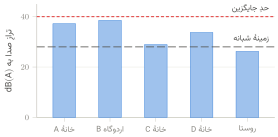
turbine noise at night at the receptors (12 turbines, W2b, teaching)
sound power 106 dB(A) each; limit 40 (PLACEHOLDER); background 28
receptor nearest m turbines dB(A) with background
farmhouse A 943 37.2 37.7
herders' camp B (seasonal) 806 38.5 38.8
farmhouse C 2332 28.9 31.5
roadside house D 1250 33.7 34.7
village centre 2854 26.2 30.2
every receptor is under the placeholder limit, but the
camp and farmhouse A hear the turbines about 10 dB above
the quiet background - clearly audible at night; if the
permit uses a background-based criterion, a noise-reduced
mode for the nearest turbines in the camp's months is
weighed against the energy it costs (ch 14)مثال 33.1 (زیرِ حد، اما شنیدنی) پرسش. صدای توربینها در اردوگاهِ فصلی چقدر است و آیا مسئلهای هست؟
پاسخ. 38.5 dB(A)، زیرِ حدِ جایگزینِ 40. اما حدودِ ده دسیبل بالاتر از زمینهٔ 28 است.
تفسیر. صدایی که ده دسیبل بالاتر از زمینه است در شبِ آرامِ بیابان بهروشنی شنیده میشود. اگر مجوز معیاری بر پایهٔ زمینه داشته باشد، حالتِ کمصدا برای توربینهای نزدیک در ماههایی که اردوگاه برپاست بررسی میشود. هزینهٔ آن انرژیِ ازدسترفته است. حد و روشِ اندازهگیری از مجوز میآید (U-112). وارسی: \(106 - 20\log_{10}806 - 11 - 1.6 = 35.3\) برای نزدیکترین توربین، و جمعِ دوازده توربین 38.5.
33.2.3 سوسوی سایه و پرهیز با جانمایی
shadow flicker of layout W2b (geometric worst case, ch 14 method)
receptor worst case h/yr worst day min
herders' camp B (seasonal) 0.0 0
farmhouse A 0.0 0
farmhouse C 0.0 0
W2b's adjustment moved the turbines out of reach of the
dwellings: layout W2 gave the camp 112 h a year (ch 14),
W2b gives none - avoidance by siting, the first step of
the mitigation hierarchy; a flicker timer remains the
remedy if a later layout change brings it backایده. جابهجاییِ توربینها در چیدمانِ W2b سوسوی سایه را در خانهها به صفر رساند. چیدمانِ W2 در اردوگاه 112 ساعت در سال سوسوی سایه داشت (فصل 14). این نخستین گامِ سلسلهمراتبِ کاهشِ اثر است: پرهیز با جانمایی (بخش 33.4.2). اگر تغییرِ بعدیِ چیدمان سوسوی سایه را برگرداند، زمانسنجِ توقف در کنترلگر چاره است.
33.2.4 برخوردِ پرندگانِ شکاری
ایده. برآوردِ سادهشدهٔ برخورد سه عدد را ضرب میکند: شمارِ گذرها از ناحیهٔ چرخشِ روتور، احتمالِ برخورد در هر گذر، و سهمی که پرندهها از آن دوری نمیکنند:
\[ N = n_\text{pass}\,p_\text{c}\,(1 - p_\text{av}) \tag{33.2}\]
در این رابطه \(N\) شمارِ برخوردهای سالانه است، \(n_\text{pass}\) شمارِ گذرها، \(p_\text{c}\) احتمالِ برخورد در هر گذر و \(p_\text{av}\) سهمِ دوری.
def collision_estimate(passages: float, p_collision: float,
avoidance: float) -> float:
"""Expected collisions a year: passages through the rotor-swept zone x
chance of a strike for one passage x (1 - avoidance)."""
return passages * p_collision * (1 - avoidance)raptor collisions near the nest (teaching collision estimate)
6000 passages a year near the nest, falling as exp(-d / 900 m); p 0.08,
avoidance 0.98
turbine distance to nest m passages/yr collisions/yr
T06 1885 739 1.182
T05 2180 532 0.852
T04 2583 340 0.544
T11 2952 226 0.361
all twelve: about 4.8 collisions a year, 120 over 25 years
far more than a long-lived raptor with a few pairs in
the region can absorb; the four nearest turbines carry 61 % - siting, a
seasonal shutdown in the breeding months or an observer
system are the options (study first: U-113)مثال 33.2 (چهار توربین، بیشترِ ریسک) پرسش. برخوردهای برآوردی در سال چند است و کدام توربینها بیشترین سهم را دارند؟
پاسخ. حدودِ پنج برخورد در سال. چهار توربینِ نزدیک به آشیانه حدودِ 61 % آن را دارند.
تفسیر. برای پرندهٔ شکاریِ بلندعمر که فقط چند جفت در منطقه دارد، این بسیار بیش از تحملِ جمعیت است. گزینهها جانمایی، توقفِ فصلی در ماههای جوجهآوری یا سامانهٔ دیدهبانی است. نخست اما مطالعهٔ میدانی لازم است (U-113). ضریبهای این درس آموزشیاند و احتمالِ دوری را باید برای همان گونه اندازه گرفت. وارسی: \(739 \times 0.08 \times 0.02 = 1.18\) برای T06.
33.2.5 خفاشها و توقفِ شبانه
bat curtailment: rotors stopped below 6 m/s on autumn nights
hours curtailed: 558 of 1353 autumn night hours
energy lost: 2.10 GWh of 218.8 GWh (0.96 %)
expected reduction of bat collisions: about 50 % (teaching)
bats fly mostly in low wind, when turbines make little
energy: a cut-in raised on autumn nights halves the
risk for a fraction of a per cent of energy - the
months, hours and speed come from the bat surveyایده. خفاشها بیشتر در بادِ کم پرواز میکنند، یعنی وقتی توربینها انرژیِ کمی میسازند. بالا بردنِ سرعتِ شروعِ کار در شبهای پاییز ریسک را تا نصف کم میکند و فقط کمتر از یک درصد انرژی را میگیرد. ماهها، ساعتها و سرعت را پیمایشِ خفاشها تعیین میکند. عددِ انرژی از سالِ داده و منحنیِ توانِ توربینِ فصلِ ۱۱ آمده است.
33.2.6 زیستگاه
habitat the project takes and a teaching offset (ha)
use area habitat offset ratio
PV block (fenced) 119.0 rangeland 1.0
roads and pads 18.7 rangeland, wadi edge 2.0
substation and BESS 2.5 rangeland 1.0
laydown (temporary) 6.0 rangeland (restored) 0.0
export line towers 0.6 farmland strips 1.0
total 146.8 ha; offset area at these ratios 159.5 ha
avoidance comes first (the wadi edge, the nest), then
restoration of temporary areas, and an offset only for
what remains - the ratios and whether an offset applies
come from the framework and the biodiversity study33.2.7 منظر و دیدهشدن
how many turbines each receptor sees (blade tip over the terrain)
receptor turbines visible nearest km
farmhouse A 12 0.9
herders' camp B (seasonal) 12 0.8
farmhouse C 12 2.3
roadside house D 12 1.2
village centre 12 2.9
on an open plain almost every turbine is seen from
everywhere: visibility is not avoidable here, so the
assessment turns to how the view changes (photomontages
agreed with the village) and to lights at nightایده. روی دشتِ باز تقریباً همهٔ توربینها از همهجا دیده میشوند. اینجا پرهیز از دیدهشدن ممکن نیست، پس ارزیابی به این میپردازد که منظر چگونه تغییر میکند. عکسهای شبیهسازیشده با روستا توافق میشوند و چراغهای هشدارِ شبانه هم بررسی میشوند. دیدِ مستقیم با نمونهبرداری از زمینِ فصلِ ۱۴ روی خطِ دید حساب شده است.
33.2.8 اثرهای انباشته
cumulative night noise at the seasonal camp (teaching)
background 28, road 33, turbines 38.5 dB(A)
all together: 39.8 dB(A)
without the turbines: 34.2 dB(A)
decibels add as energy: the turbines dominate and the
road adds little - but a second project on the next
ridge would add its own share, which is why cumulative
effects are assessed with the other projects, not aloneمثال 33.3 (یک پروژهٔ دیگر روی پشتهٔ بعدی) پرسش. چرا صدای انباشته با پروژههای دیگر ارزیابی میشود و نه تنها؟
پاسخ. چون دسیبلها بهصورتِ انرژی جمع میشوند و پروژهٔ دوم سهمِ خودش را میافزاید. اینجا جاده تنها حدودِ یک دسیبل به صدای توربینها اضافه میکند.
تفسیر. اثرِ انباشته برای صدا، ترافیک، آب و زیستگاه با همهٔ پروژههای موجود و برنامهریزیشده در منطقه سنجیده میشود. هیچ پروژهای بهتنهایی از حد نمیگذرد، اما جمعِ آنها شاید بگذرد. وارسی: \(10\log_{10}(10^{2.8} + 10^{3.3} + 10^{3.85}) = 39.8\).
- چرا دسترسیِ دامداران در غربالگری بالاتر از صدا قرار گرفت؟
- جمعِ دو چشمهٔ 40 dB(A) چقدر است؟
- صدای یک توربینِ 106 dB(A) در 1,000 m چقدر است؟
- چرا صدای زیرِ حد هم ممکن است مسئله باشد؟
- سوسوی سایهٔ W2b چرا صفر است؟
- معادلهٔ 33.2 را توضیح دهید.
- چرا توقفِ شبانه برای خفاشها انرژیِ کمی میگیرد؟
- چرا دیدهشدن روی دشتِ باز اجتنابپذیر نیست؟
- اثرِ انباشته چیست؟
33.2.9 حدِ مطالعهٔ هر موضوع
برنامه:
python -m companion.ch33.examples_mstudy area of each topic: set by the reach of the impact (teaching)
topic study area reason
noise 2 km from any turbine below background beyond
shadow flicker 1.5 km (10 rotor diameters) too faint beyond
raptors 10 km around the nest range of a pair
bats site + 2 km routes, roosts
landscape 20 km (visibility) a dot beyond
water the aquifer (20 km2) shared resource
traffic route from port to site where trucks are
social village, camps, strips who is affected
a single fence-line boundary would miss the aquifer, the
raptors' range and the haul route; each topic's boundary
is written down with its reason at scoping, so a reviewer
can see why a receptor is in or outایده. حدِ مطالعه را بُردِ اثر تعیین میکند، نه حصارِ ساختگاه. صدا تا جایی که زیرِ صدای زمینه برود بررسی میشود. برای پرندهٔ شکاری کلِ قلمروی یک جفت، و برای آب کلِ آبخوان، مطالعه میشود. ترافیک در تمامِ مسیرِ بندر تا ساختگاه بررسی میشود (فصلِ ۳۱). حدِ هر موضوع با دلیلش در مرحلهٔ تعیینِ دامنه نوشته میشود تا بازبین ببیند چرا گیرندهای درون یا بیرونِ آن است.
33.2.10 خطمبنای خاک
soil baseline before construction: nickel in 12 samples (synthetic)
mean 55.8 mg/kg, sd 15.0; upper baseline 87 (mean + 1.8 sd of the logs)
screening value of the permit (PLACEHOLDER): 60 mg/kg
cell after a fire result above baseline? above screen?
1 41 no no
2 55 no no
3 72 no yes
4 118 yes yes
the ground is naturally rich in nickel: cell(s) [3] are
above the generic screen but inside the baseline - without
the baseline they would be dug out for nothing; only
cell(s) [4] stand out from both, so only they are excavated
and re-tested (lesson E) - the baseline is sampled before
the first bulldozer, never afterمثال 33.4 (نیکلِ طبیعی، نه آلودگی) پرسش. پس از یک حریق، خانهٔ ۳ نیکلِ 72 mg/kg دارد که از مقدارِ غربالگریِ جایگزینِ 60 بیشتر است. آیا باید خاکش برداشته شود؟
پاسخ. نه. کرانِ بالای خطمبنا 87 است و 72 درونِ آن قرار میگیرد. فقط خانهٔ ۴، با 118، از هر دو بیشتر است.
تفسیر. خاکِ اینجا بهطورِ طبیعی نیکلِ زیادی دارد. بیخطمبنا، خاکِ سالم بهعنوانِ پسماندِ خطرناک برداشته میشد. خطمبنا پیش از نخستین بولدوزر نمونهبرداری میشود، چون پس از ساخت دیگر نمیتوان آن را ساخت. کرانِ بالا با همان روشِ آماریای که مجوز میخواهد حساب میشود (بخش 33.6.2). وارسی: \(72 < 87\) و \(118 > 87\).
33.2.11 صدای ترافیک از کنارِ روستا
ایده. صدای روزانهٔ جاده با لگاریتمِ شمارِ وسیلهها رشد میکند. هر وسیلهٔ سنگین در این درس برابرِ ده وسیلهٔ سبک فرض میشود. تغییرِ صدا نسبت به خطمبنا چنین است:
\[ \Delta L = 10\log_{10}\frac{Q_\text{l} + w\,Q_\text{h}}{Q_\text{l,0} + w\,Q_\text{h,0}} \tag{33.3}\]
در این رابطه \(Q_\text{l}\) و \(Q_\text{h}\) شمارِ روزانهٔ وسیلههای سبک و سنگیناند، \(w\) ضریبِ همارزیِ وسیلهٔ سنگین است و زیرنویسِ ۰ خطمبنا را نشان میدهد.
road traffic noise past the village: change from the baseline
baseline 360 light + 40 heavy a day; one heavy ~ 10 light (teaching)
case equivalent flow change dB
baseline 760 0.0
+ buses and cars 820 0.3
+ trucks (peak month) 1,980 4.2
the trucks raise the daily road noise by 4.2 dB - more
than the 3 dB a resident notices as a clear change; the
cars and buses alone add almost nothing. Holding trucks
in school hours moves them, it does not remove them: the
daily level is the same, so the remedy for noise is a
speed limit, a smooth surface and no night convoys
through the village except the abnormal loads (ch 31)مثال 33.5 (نگهداشتنِ کامیونها صدا را کم نمیکند) پرسش. کامیونهای ساخت صدای روزانهٔ جادهٔ روستا را چقدر بالا میبرند و آیا نگهداشتنشان در ساعتهای مدرسه کمکی میکند؟
پاسخ. 4.2 dB، بیش از 3 dB که ساکنان آن را تغییرِ روشن حس میکنند. نگهداشتنِ کامیونها فقط آنها را به ساعتِ دیگری میبرد و ترازِ روزانه همان میماند.
تفسیر. تدبیرِ ساعتِ مدرسه برای ایمنیِ کودکان است (بخش 32.8)، نه برای صدا. چارهٔ صدا سرعتِ کمتر، رویهٔ صاف و نبودِ کاروانِ شبانه از درونِ روستاست، جز بارهای سنگینِ فصلِ ۳۱. وارسی: \(10\log_{10}(1{,}980/760) = 4.2\).
33.2.12 نشتِ روغن بیرون از حوضچهٔ مهار
an oil spill outside a bund and what it costs (teaching)
spill: 2,000 L of transformer oil on sandy ground
soil holds about 30 L/m3: contaminated soil about 67 m3 = 113 t
the same spill inside a bund of 29.6 m3 (110 % of 22 m3 + 100 mm rain): 0 m3
response, in order: stop the source, contain (pads,
a sand bund), report, recover free oil, excavate,
test the walls and floor of the hole, record
a few hours of top-up outside the bund on a drip tray
and a hardstand avoid a hundred tonnes of hazardous
waste: the method statement (ch 49) puts the work where
a spill cannot reach the ground; the inventory and spill
kits are in ch 32مثال 33.6 (دو هزار لیتر، صد تن خاک) پرسش. 2,000 L روغنِ ترانسفورماتور هنگامِ پرکردن روی زمینِ ماسهای ریخته است. چقدر خاکِ آلوده پدید میآید؟
پاسخ. حدودِ 67 m³، یعنی حدودِ 113 تن پسماندِ خطرناک. همان نشت درونِ حوضچهٔ مهار، با گنجایشِ 29.6 m³، هیچ خاکی را آلوده نمیکند.
تفسیر. چند ساعت کار روی سینیِ نشت و سکوی سخت صد تن پسماند را حذف میکند. روشِ اجرای کار، کار را جایی میگذارد که نشت به زمین نرسد (فصلِ ۴۹). فهرستِ مواد خطرناک و جعبههای نشت در فصلِ ۳۲ آمدهاند. ترتیبِ پاسخ این است: قطعِ منبع، مهار، گزارش، جمعکردنِ روغنِ آزاد، خاکبرداری، آزمونِ دیواره و کفِ گودال، و ثبت. وارسی: \(2{,}000/30 = 67\,\text{m}^3\).
33.2.13 مجوزهای محیطی روی مسیرِ بحرانی
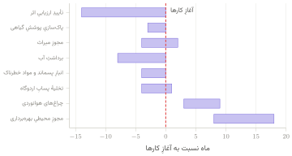
environmental permits on the critical path (lead times are PLACEHOLDERS)
permit lead mo needed by month apply by
ESIA approval 14 0 -14
vegetation clearing 3 0 -3
heritage survey clearance 6 2 -4
water abstraction 8 0 -8
waste and hazardous storage 4 0 -4
wastewater discharge (camp) 5 1 -4
aviation lighting approval 6 9 3
operating environmental permit 10 18 8
month 0 is the start of works; the earliest application:
ESIA approval at month -14
the ESIA sets the pace: every other permit leans on it,
and the operating permit must be applied for before the
plant is half built - each row has an owner and a date in
the project schedule (ch 22, 49)ایده. هر مجوز زمانِ آمادهسازیِ خودش را دارد. دیرترین ماهِ درخواست برابرِ ماهِ نیاز منهای این زمان است. تأییدِ ارزیابیِ اثر 14 ماه پیش از آغازِ کارها لازم است و مجوزهای دیگر به آن تکیه دارند. مجوزِ محیطیِ بهرهبرداری باید پیش از نیمهکاره شدنِ ساخت درخواست شود. نامِ مجوزها، زمانها و مسئولها از قانونِ کشور و مقامِ مسئول میآیند (U-112، فصلهای ۵۵ تا ۵۷). هر ردیف با مسئول و تاریخ در برنامهٔ زمانیِ پروژه نوشته میشود (فصلهای ۲۲ و ۴۹).
- چرا حدِ مطالعهٔ آب کلِ آبخوان است؟
- چرا خطمبنای خاک پیش از ساخت نمونهبرداری میشود؟
- معادلهٔ 33.3 را توضیح دهید.
- اگر کامیونها نصف شوند، تغییرِ صدا چقدر میشود؟
- ترتیبِ پاسخ به نشتِ روغن را بنویسید.
- چرا مجوزِ بهرهبرداری پیش از نیمهٔ ساخت درخواست میشود؟
33.2.14 احتمالِ برخورد در یک گذر از روتور
ایده. پرندهای که مستقیم از صفحهٔ روتور میگذرد فقط وقتی برخورد میکند که پرهای در همان مدتِ گذر به جای او برسد. هرچه پره پهنتر و کندتر از پرنده باشد، و هرچه پرنده درازتر باشد، این مدت بیشتر است. مدلِ سادهشدهٔ تکگذر احتمال را در شعاعِ \(r\) چنین میدهد:
\[ \begin{aligned} \alpha_\text{v} &= \frac{v}{r\,\Omega} \\ p(r) &= \frac{B\,\Omega}{2\pi v}\Big[\,\big|c \sin\gamma + \alpha_\text{v}\,c\cos\gamma\big| + \max(L,\; W\alpha_\text{v})\Big] \end{aligned} \tag{33.4}\]
در این رابطه \(v\) سرعتِ پرنده است، \(\Omega\) سرعتِ زاویهایِ روتور، \(B\) شمارِ پرهها، \(c\) وتر و \(\gamma\) زاویهٔ پره در شعاعِ \(r\)، و \(L\) و \(W\) درازا و پهنای بالهای پرنده. اگر روتور بایستد (\(\Omega \to 0\))، احتمال به سهمی از دایره میرسد که پرههای ایستاده میپوشانند. پرهای که نمیچرخد هم مانع است.
def transit_probability(r: float, chord: float, pitch_deg: float,
blades: int, omega: float, v_bird: float,
length: float, span: float) -> float:
"""Chance a bird flying straight through the rotor at radius r is
struck (simplified single-transit model, flapping flight)."""
a = v_bird / (r * omega) # bird speed / blade speed
g = math.radians(pitch_deg)
depth = abs(chord * math.sin(g) + a * chord * math.cos(g))
rate = blades * omega / (2 * math.pi * v_bird)
return min(rate * (depth + max(length, span * a)), 1.0)برنامه:
python -m companion.ch33.examples_r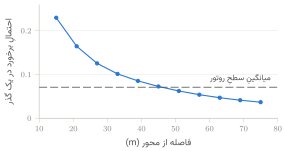
chance a raptor flying through the rotor is struck (single transit)
rotor 75 m, 3 blades at 11.5 rpm; bird 0.6 m long, 1.8 m span, 12 m/s
radius m chord m angle deg chance
15 4.0 15.0 0.230
30 3.2 11.8 0.111
45 2.5 8.5 0.073
60 1.8 5.2 0.050
75 1.0 2.0 0.037
averaged over the swept area: 0.071
the root is the dangerous part (wide, slow-turning
chord), but most of the area is out near the tip, where
the chance is small: the disc average, 0.07, is close to the
0.08 used in lesson A - a check of the teaching value,
not a replacement for the study (U-113)مثال 33.7 (وارسیِ یک مقدارِ آموزشی) پرسش. درسِ الف برای احتمالِ برخورد در هر گذر 0.08 را فرض کرد. آیا این عدد با هندسهٔ روتور و پرنده جور است؟
پاسخ. میانگینِ سطحِ روتور 0.071 است، نزدیک به 0.08. در ریشه احتمال 0.23 است و در نوکِ پره 0.037.
تفسیر. ریشهٔ پره، با وترِ پهن و سرعتِ کم، خطرناکترین بخش است. اما بیشترِ سطحِ روتور نزدیکِ نوک است و همانجا احتمال کم است. این وارسی عددِ آموزشی را تأیید میکند، اما جای مطالعه را نمیگیرد. پرهٔ واقعی را سازنده میدهد و پرواز را پیمایشِ گونه (U-113). وارسی: در نوکِ پره \(\alpha_\text{v} = 12/(75 \times 1.204) = 0.133\) و \(B\Omega/(2\pi v) = 0.048\) است، پس \(p = 0.048 \times (0.168 + 0.6) = 0.037\).
33.2.15 نوکِ پره از هر گیرنده چقدر بزرگ دیده میشود؟
how large the nearest turbine looks (blade tip, flat ground, teaching)
receptor nearest m tip angle deg reading
farmhouse A 943 10.5 dominant
herders' camp B (seasonal) 806 12.2 dominant
farmhouse C 2332 4.3 noticeable
roadside house D 1250 8.0 prominent
village centre 2854 3.5 noticeable
a 175 m tip at 800 m stands about as tall as a fist held
at arm's length (about 10 deg): the camp and farmhouse A see the farm
as a dominant feature, the village as a noticeable one;
the bands are teaching readings - the landscape study and
the photomontages agreed with the village judge themایده. زاویهٔ عمودیِ نوکِ پره در فاصلهٔ \(d\) برابرِ \(\arctan(h_\text{tip}/d)\) است. نوکِ 175 m در 800 m حدودِ ۱۲ درجه است، یعنی به اندازهٔ مشتی که در فاصلهٔ یک بازو گرفته شود. اردوگاه و خانهٔ A مزرعه را عنصرِ غالبِ منظر میبینند و روستا آن را چیزی دیدنی. ردهها برداشتهای آموزشیاند. مطالعهٔ منظر و عکسهای شبیهسازیشدهای که با روستا توافق شدهاند داوری میکنند (بخش 33.2.7).
- معادلهٔ 33.4 را توضیح دهید.
- چرا ریشهٔ پره خطرناکترین بخش است؟
- چرا میانگینِ سطح به احتمالِ نزدیکِ نوک نزدیکتر است تا به ریشه؟
- اگر روتور بایستد، احتمال به چه میرسد؟
- زاویهٔ نوکِ پره از خانهٔ D چند درجه است؟
33.3 ب. ذینفعان و عملکردِ اجتماعی
اثرهای اجتماعی را مردمی تجربه میکنند که هر کدام صدا، حق و نیازِ خودشان را دارند. این بخش نشان میدهد چه کسانی ذینفعاند و چگونه درگیر میشوند. نیز نشان میدهد چه چیزی و چه وقت افشا میشود، زمین در دستِ کیست، معیشت چه تغییری میکند، چه کسانی آسیبپذیرترند، زنجیرهٔ تأمین چه ریسکهایی دارد، میراث چگونه حفظ میشود و تعهدها چگونه ثبت میشوند. جامعه ساختگی است و همان جامعهٔ فصلهای ۱۴ و ۲۲ است (A-380، A-381). قاعدههای قانونی، وظیفههای مشورت و فرایندهای زمین به چارچوبِ حاکم و کارشناسانِ صلاحیتدارِ محلیِ اجتماعی و حقوقی بستگی دارند.
برنامه:
python -m companion.ch33.examples_b33.3.1 نقشهٔ ذینفعان
STAKEHOLDERS = [ # (group, influence 1-5, interest/impact 1-5)
("herding families (5)", 2, 5), ("village council", 4, 4),
("farm 1 owner", 2, 4), ("corridor strip owners (8)", 2, 3),
("women's group", 1, 4), ("rangeland authority", 5, 3),
("environment authority", 5, 3), ("grid operator", 5, 2),
("lenders", 5, 3), ("local contractors", 3, 4),
("road users", 1, 2), ("regional NGO", 3, 3)]
stakeholder map: influence and interest (teaching scores)
group infl int engagement
herding families (5) 2 5 involve: high impact, low voice
village council 4 4 collaborate
farm 1 owner 2 4 involve: high impact, low voice
corridor strip owners (8) 2 3 inform
women's group 1 4 involve: high impact, low voice
rangeland authority 5 3 consult and inform
environment authority 5 3 consult and inform
grid operator 5 2 consult and inform
lenders 5 3 consult and inform
local contractors 3 4 collaborate
road users 1 2 inform
regional NGO 3 3 inform
the groups most affected and least able to be heard - the
herders, the women's group, the farm owner - get the most
deliberate engagement: their own meetings, languages and
times, not a seat at the authority's tableایده. کسانی که بیشترین اثر را میپذیرند و کمترین صدا را دارند سنجیدهترین درگیرسازی را میگیرند. دامداران، گروهِ زنان و مالکِ مزرعه نشستها، زبان و زمانِ خودشان را دارند، نه صندلیای سرِ میزِ مقامِ مسئول. نقشه با جامعه بازبینی میشود، چون نفوذ و اثرپذیری از بیرون درست دیده نمیشود.
33.3.2 افشا پیش از تصمیم
disclosure before decisions (days are PLACEHOLDERS of the framework)
document days ahead
scoping summary 45
how: meeting, radio, leaflet
draft impact assessment 60
how: summary in local language, meetings
grievance mechanism 30
how: posters, phone line, box at the school
resettlement or livelihood plan (if any) 60
how: household visits
annual monitoring report 30
how: village board, meeting
disclosure is useful only if people can read it in time
and in their language, and if what they say can still
change the decision - comments and the answers to them
are recorded (lesson H)33.3.3 دفترِ زمین
land register of the project footprint (teaching; tenure to verify)
parcel tenure ha instrument
state rangeland state, customary use 126.0 lease (authority)
farm 1 private title 0.9 lease or easement
farm 2 private title 0.0 none
customary grazing customary (herders) 3.1 agreement + plan
village lands communal 0.0 none; route kept
corridor strips (8) private, informal use 0.6 easements (towers)
formal title is only part of the picture: customary
grazing and informal use of the strips are rights people
live by, and the register records them too - which
process applies (lease, easement, acquisition) is set by
the law and the lenders' framework with local expertsایده. سندِ رسمی فقط بخشی از تصویر است. چرای عرفی و استفادهٔ غیررسمی از نوارهای زمین حقوقیاند که مردم با آن زندگی میکنند. دفترِ زمین آنها را هم ثبت میکند. اینکه کدام فرایند به کار رود، اجاره، حقِ ارتفاق یا تملک، با قانون و چارچوبِ وامدهندگان و با کارشناسانِ محلی تعیین میشود. این کتاب فرایندِ همگانیای فرض نمیکند.
33.3.4 راهِ دامداران تا چشمه
the herders' route to the spring and its cost (teaching)
5 households, 600 animals; route 1.2 km, detour 3.5 km
extra walking: 4.6 km a day, 920 km over 200 grazing days
grazing income supported: 72 k u a year
at 5 % loss of condition from the longer walk (teaching): 3.6 k u a year
a gap in the PV fence and a crossing over the cable trench
restore the old route for much less than any payment;
what is offered, and whether compensation applies, is
agreed with the families under the framework (lab G)مثال 33.8 (یک دریچه در حصار) پرسش. حصارِ بلوکِ خورشیدی راهِ دامداران تا چشمه را از 1.2 به 3.5 km میرساند. پیامد چیست و ارزانترین چاره کدام است؟
پاسخ. 4.6 km راهِ بیشتر در روز و حدودِ 3.6 k u کاهشِ درآمد در سال با فرضِ آموزشی. یک دریچه در حصار و یک گذرگاه روی ترانشهٔ کابل راهِ قدیم را بازمیگردانند.
تفسیر. پرهیز، یعنی برگرداندنِ راه، از جبرانِ پولی ارزانتر است و معیشت را در سرچشمه حفظ میکند. آنچه پیشنهاد میشود، و اینکه جبران هم لازم است یا نه، با خانوادهها و زیرِ چارچوبِ حاکم توافق میشود (بخش 33.8.4). وارسی: \((3.5 - 1.2) \times 2 = 4.6\,\text{km}\).
33.3.5 گروههای آسیبپذیر
vulnerable groups and the measures that reach them (teaching)
group why vulnerable here
women-headed households fewer jobs, harder to attend meetings
measure: women-only meetings, job quota
elderly herders long detours, little cash
measure: route kept, water point
seasonal camp families away during consultations
measure: visits at the camp
people without title left out of land lists
measure: register customary use
children near the haul road traffic
measure: school-hour truck hold (ch 32)
vulnerability is local: the screening asks who could be
harmed more or helped less, and checks each plan against
them33.3.6 کار و زنجیرهٔ تأمین
supplier due diligence on labour and supply chain (teaching scores)
supplier traced audit code grievance score action
modules S1 95 % 1 1 1 0.98
modules S2 40 % 0 1 0 0.36 plan
turbines 80 % 1 1 1 0.92
steel structures 70 % 1 0 1 0.68 plan
cables 60 % 1 1 0 0.64 plan
forced and child labour risks sit deep in raw-material
chains: traceability to the source, independent audits
and a supplier grievance channel are asked for in the
tender; a weak score leads to a corrective plan with
dates, and the lenders' and the law's rules decide the restمثال 33.9 (ریسکِ پنهان در مواد خام) پرسش. کدام تأمینکنندگان برنامهٔ اصلاحی میگیرند و چرا؟
پاسخ. ماژولِ S2، سازههای فولادی و کابلها. ردیابیِ ماژولِ S2 تا مادهٔ خام فقط 40 % است و ممیزی و سازوکارِ شکایت ندارد.
تفسیر. ریسکِ کارِ اجباری و کارِ کودکان در عمقِ زنجیرهٔ مواد خام است. ردیابی تا سرچشمه، ممیزیِ مستقل و سازوکارِ شکایتِ تأمینکننده در مناقصه خواسته میشوند. امتیازِ ضعیف برنامهٔ اصلاحیِ تاریخدار میسازد. قاعدههای وامدهندگان و قانون بقیه را تعیین میکنند (فصلهای ۳۸ تا ۴۰). وارسی: \(0.4 \times 0.4 + 0.2 = 0.36\).
33.3.7 میراث و یافتههای اتفاقی
heritage buffers and chance finds (teaching)
site buffer m nearest planned works m ok?
cemetery 300 400 yes
ruin 200 120 NO
expected chance finds in 45 km of trenches at 0.04 a km: 1.8
the ruin's buffer is breached by the corridor works: the
route moves or the works are watched by an archaeologist;
every crew knows the chance-find rule - stop, protect,
report - and the authority decides what happens nextایده. حریمِ ویرانه با کارهای مسیرِ خط شکسته شده است. یا مسیر جابهجا میشود، یا کار زیرِ نظرِ باستانشناس انجام میشود. هر گروهِ کار قاعدهٔ یافتهٔ اتفاقی را میداند: بایست، حفاظت کن، گزارش بده. مقامِ مسئول تصمیم میگیرد پس از آن چه شود (بخش 33.9.4).
33.3.8 دفترِ تعهدها
commitments register: only approved and funded promises (teaching)
commitment approved funded owner
local hiring share 40 % True True HR manager
water point for herders True True E&S manager
new school roof False False - DO NOT PROMISE
paved village road False False - DO NOT PROMISE
school-hour truck hold True True logistics lead
community fund 0.5 % of revenue True False owner fund first
3 items are not ready to be promised: an unfunded promise
made in a meeting becomes a grievance later; the register
is what staff may say, and it is reported back each yearمثال 33.10 (وعدهای که شکایت میشود) پرسش. چرا «سقفِ تازهٔ مدرسه» نباید در نشستِ روستا وعده داده شود؟
پاسخ. چون نه تأیید شده و نه بودجه دارد.
تفسیر. وعدهٔ بیبودجهای که در نشستی داده شود بعدها شکایت میشود و اعتماد را از میان میبرد. دفترِ تعهدها آن چیزی است که کارکنان اجازه دارند بگویند و هر سال به جامعه گزارش میشود (بخش 32.8.6). صندوقِ اجتماعی تأیید شده اما بودجه ندارد، پس پیش از اعلام باید بودجه بگیرد. وارسی: سه قلم از شش آمادهٔ وعده نیستند.
- کدام گروهها در گوشهٔ «اثرپذیرِ کمصدا»ی نقشهاند؟
- چرا افشا باید پیش از تصمیم و به زبانِ محلی باشد؟
- چرا دفترِ زمین کاربریِ عرفی را هم ثبت میکند؟
- راهِ اضافهٔ روزانهٔ دامداران چقدر است؟
- یک گروهِ آسیبپذیر و تدبیری که به آن میرسد را نام ببرید.
- سه خواستهٔ مناقصه برای ریسکِ کار در زنجیرهٔ تأمین را بنویسید.
- قاعدهٔ یافتهٔ اتفاقی چیست؟
- چه وقت میتوان چیزی را به جامعه وعده داد؟
33.3.9 سلامت، ایمنی و امنیتِ جامعه با عدد
اثرهای ساخت و بهرهبرداری بر سلامت، ایمنی و امنیتِ جامعه با کنترلهای اندازهپذیر، مسئولِ نامبرده و پایش مدیریت میشوند. این درس پنج نمونه را با عدد میسنجد: چراغهای هوانوردی در شب، فشارِ هجومِ کارگری بر درمانگاهِ روستا، رفتارِ نیروهای حفاظت، ادعاهای استخدام و خریدِ محلی، و ارزشِ چرای ازدسترفته (A-380 تا A-382).
برنامه:
python -m companion.ch33.examples_q33.3.9.1 چراغهای هوانوردی
aviation obstacle lights seen from the village at night (teaching)
12 turbines, about 4,380 night hours a year
always on: 4,380 lit hours
aircraft-detection lighting: 88 lit hours (2 %)
synchronised flashing: one pulse across the farm, not
twelve unrelated blinks
lights are an aviation-safety requirement, so the choice
of system is the aviation authority's; where it allows
detection-activated lights, the night view from the
village goes dark 98 % of the time - the photomontages
of lesson A include a night view either wayایده. چراغها الزامِ ایمنیِ هوانوردیاند و نوعِ سامانه را مقامِ هوانوردی تعیین میکند. اگر چراغِ فعالشونده با آشکارسازیِ هواپیما مجاز باشد، شبِ روستا 98 % وقت تاریک میماند. چشمکزدنِ همزمانِ همهٔ توربینها هم یک تپش در کلِ مزرعه میسازد، نه دوازده چشمکِ بینظم. عکسهای شبیهسازیشدهٔ درسِ الف یک نمای شبانه هم دارند (بخش 33.2.7).
33.3.9.2 هجومِ کارگری و درمانگاهِ روستا
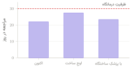
labour influx and the village clinic at the construction peak (teaching)
peak workforce 450, local 40 %: 270 people arrive, against a village of 600
clinic: 22 visits a day now, capacity 30
incoming workers at 0.02 visits a day each: +5.4 a day -> 91 % of capacity
with a site medic treating three in four: 78 %
a camp of incoming workers is almost half the village's
size: clinic, water, rents, shops and the roads all feel
it - the influx plan counts each local service, pays for
the site's own medic, and asks the clinic, not assumesمثال 33.11 (نیمی از روستا، یکشبه) پرسش. در اوجِ ساخت چند نفر به منطقه میآیند و درمانگاهِ روستا چه وضعی پیدا میکند؟
پاسخ. 270 نفر، کنارِ روستایی ۶۰۰ نفره. درمانگاه به 91 % ظرفیتش میرسد. با پزشکِ ساختگاه که سه مراجعه از هر چهار را درمان کند، این عدد 78 % میشود.
تفسیر. اردوگاهی که تقریباً نصفِ روستاست بر درمانگاه، آب، اجارهها، مغازهها و راهها اثر میگذارد. برنامهٔ هجومِ کارگری هر خدمتِ محلی را میشمارد، هزینهٔ پزشکِ ساختگاه را میپردازد و ظرفیت را از خودِ درمانگاه میپرسد، نه آنکه فرضش کند. اقامتگاه و آبِ اردوگاه در فصلِ ۳۲ آمدهاند (مثال 32.30). وارسی: \(450 \times 0.6 \times 0.02 = 5.4\) مراجعه در روز.
33.3.9.3 رفتارِ نیروهای حفاظت
conduct of the security staff (synthetic year; non-tactical)
guards 18; guard-days 6,570
trained in the code of conduct and human rights: 16 of 18 (89 %)
conduct complaints from the community: 3 = 0.46 per 1,000 guard-days
every complaint goes through the grievance mechanism,
is investigated by someone outside the security chain,
and its outcome is reported; untrained guards do not
work until trained; force is never a tool against the
community, and public authorities' involvement follows
the law and the framework (ch 32 lesson H)ایده. امنیت محترم به حقوقِ مردم است و با رفتار سنجیده میشود، نه با جزئیاتِ تاکتیکی. نگهبانِ آموزشندیده کار نمیکند. هر شکایت از راهِ سازوکارِ شکایت میرسد، کسی بیرون از زنجیرهٔ امنیت آن را بررسی میکند و نتیجهاش گزارش میشود. نقشِ نیروهای دولتی را قانون و چارچوب تعیین میکنند (بخش 32.10.2).
33.3.9.4 ادعاهای استخدام و خریدِ محلی
local hiring and buying: the claim against the evidence (synthetic)
measure claimed with evidence rule
local hires 45 % 36 % resident > 12 months
local purchases 12 % 7 % local invoices
the claims counted anyone with a local address and every
purchase through a local agent: the definitions are
written first, the evidence is kept, and only verified
numbers go to the village and the lendersمثال 33.12 (چهلوپنج درصدی که سیوشش درصد است) پرسش. پیمانکار 45 % استخدامِ محلی و 12 % خریدِ محلی ادعا میکند. با شاهد چند درصد است؟
پاسخ. 36 % و 7 %.
تفسیر. ادعا هر کسی را که نشانیِ محلی داشت و هر خریدی را که از راهِ نمایندهٔ محلی بود شمرده بود. تعریفها اول نوشته میشوند: ساکنِ بیش از دوازده ماه پیش از استخدام، و فاکتورِ تأمینکنندهٔ ثبتشده در محل. شاهد نگه داشته میشود و فقط عددِ وارسیشده به روستا و وامدهندگان میرسد. وارسی: \(36 < 40\)، پس هدفِ 40 % هنوز برآورده نشده است (بخش 33.4.3).
33.3.9.5 ارزشِ چرای ازدسترفته
the value of 3.1 ha of customary grazing lost (teaching)
income it supported: 3.1 ha x 0.77 animals/ha x 0.12 = 0.29 k u a year
present value over 25 years at 6 %: 3.7 k u
a one-off payment of the yearly loss would be far too
little; replacement land or an improved pasture keeps the
livelihood itself - whether compensation applies, its
basis and who receives it are set by the framework with
local experts and agreed with the families (lab G)ایده. ارزشِ کنونیِ درآمدی که هر سال از دست میرود با ضریبِ مستمری حساب میشود:
\[ PV = A\,\frac{1 - (1+i)^{-n}}{i} \tag{33.5}\]
در این رابطه \(A\) درآمدِ سالانهٔ ازدسترفته است، \(i\) نرخِ تنزیل و \(n\) شمارِ سالها. پرداختی برابرِ درآمدِ یک سال بسیار کم است. زمینِ جایگزین یا مرتعِ بهترشده خودِ معیشت را حفظ میکند. اینکه جبران اعمال میشود یا نه، پایهاش چیست و چه کسی آن را میگیرد، با چارچوب و کارشناسانِ محلی تعیین و با خانوادهها توافق میشود (بخش 33.8.4).
- چراغِ فعالشونده با آشکارسازی چند ساعت از شب روشن است؟
- چرا ظرفیتِ درمانگاه را باید از خودِ درمانگاه پرسید؟
- رفتارِ نیروهای حفاظت با چه شاخصهایی سنجیده میشود؟
- دو تعریفِ لازم برای ادعای استخدام و خریدِ محلی را بنویسید.
- معادلهٔ 33.5 را توضیح دهید.
33.4 پ. کاهشِ اثر و پایش
ارزیابی بیاقدام فقط یک گزارش است. این بخش اثرها را به مسیرهایشان میشکند، برای هر کدام گامی از سلسلهمراتبِ کاهشِ اثر برمیگزیند و با شاخصها پایش میکند. اقدامهای اصلاحی را دنبال میکند، تلاشِ لازم برای دیدنِ تغییر را میسنجد و معیارهای پایان را با شاهد تعیین میکند. شاخصها و هدفها از ارزیابیِ اثر، مجوزها و برنامهٔ وامدهندگان میآیند (A-382).
برنامه:
python -m companion.ch33.examples_c33.4.1 مسیرهای اثر
impact pathways: source -> pathway -> receptor -> chosen step
source pathway receptor
turbine rotors air (sound) camp, farmhouse A
step: minimise: reduced mode
grading, haul air (dust) village, farms
step: minimise: water, speed
well pumping aquifer village wells
step: avoid: limit, monitor
rotors in flight path collision raptors near nest
step: avoid: siting; minimise
trucks village road children, elders
step: minimise: hours, marshal
PV fence lost access herders' families
step: avoid: gap and crossing
trenches ground buried heritage
step: avoid: buffer; chance finds
fire water drains, soil wadi, groundwater
step: minimise: closed pond
a pathway with no receptor is no impact; breaking the
pathway (a gap in the fence, a closed pond) often beats
treating the receptor - and avoidance comes firstایده. هر اثر سه بخش دارد: چشمه، مسیر و گیرنده. مسیری که به گیرنده نرسد اثری ندارد. شکستنِ مسیر، مثلاً دریچهای در حصار یا حوضچهای بسته، اغلب از درمانِ گیرنده بهتر است.
33.4.2 سلسلهمراتبِ کاهشِ اثر
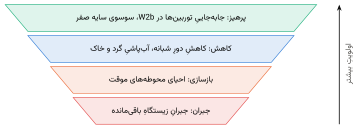
ایده. چهار گام به ترتیب برگزیده میشوند: پرهیز، کاهش، بازسازی و در آخر جبران برای آنچه میماند. پرهیز در طراحی ارزان است و پس از ساخت گران. چیدمانِ W2b سوسوی سایه را با جانمایی حذف کرد (بخش 33.2.3). جبران فقط برای اثرِ باقیمانده است و هرگز جای پرهیز را نمیگیرد. این همان منطقِ سلسلهمراتبِ کنترلها در ایمنی است (بخش 32.2.3).
33.4.3 شاخصها و وضعیتِ سبز، زرد و قرمز
indicators with targets and a red/amber/green status (synthetic)
indicator value target status
night noise at camp B, dB(A) 38.5 40.0 green
dust days over trigger a month 3.0 2.0 amber
village well level change, m 0.6 0.5 amber
raptor collisions found a year 1.0 0.0 amber
grievances closed in 30 days, % 88.0 90.0 amber
local hires, % of workforce 36.0 40.0 amber
restored area with cover >= 70 %, % 55.0 80.0 red
amber asks for a look, red for a corrective action with
an owner and a date; an indicator without a target, a
frequency and an owner is a statistic, not monitoringایده. هر شاخص هدف، رواداری، بسامدِ اندازهگیری و مسئول دارد. وضعیتِ سبز یعنی در هدف، زرد یعنی در رواداری و قرمز یعنی بیرون از آن. زرد نگاهی دقیقتر میخواهد و قرمز اقدامِ اصلاحی با مسئول و تاریخ. شاخصی که هدف و مسئول نداشته باشد یک آمار است، نه پایش.
33.4.4 اقدامهای اصلاحی
corrective actions of the construction year (synthetic)
actions raised: 46; median days to close 30
closed within 30 days: 50 %; longest 113 days
closure means the cause is fixed and checked on site -
an action closed by a new procedure nobody follows is
reopened at the next audit (ch 32, lesson A)33.4.5 تلاشِ پایش برای دیدنِ تغییر
ایده. پیمایشِ کوتاه تغییرِ واقعی را از تصادف جدا نمیکند. توانِ آزمون احتمالِ دیدنِ تغییری است که واقعاً رخ داده است. برنامهٔ پایش تلاشِ لازم را از تغییری که باید ببیند تعیین میکند.
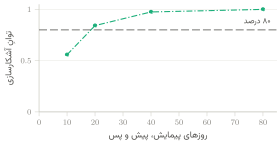
survey days needed to see a 30 % fall in raptor passages (Poisson)
before: 3.0 passages a day; after: 2.1; one-sided test 5 %
days before and after power to detect
10 56 %
20 84 %
40 98 %
80 100 %
a short survey cannot tell a real change from chance: the
monitoring plan fixes the effort from the change it must
see - before the turbines turn, so there is a baselineمثال 33.13 (خطمبنا پیش از چرخیدنِ پرهها) پرسش. چند روز پیمایش، پیش و پس از ساخت، لازم است تا کاهشِ سیدرصدیِ گذرها با توانِ 80 % دیده شود؟
پاسخ. حدودِ ۲۰ روز در هر دوره. با ۱۰ روز توان فقط 56 % است.
تفسیر. پیمایشِ خطمبنا باید پیش از چرخیدنِ توربینها انجام شود، وگرنه هیچ «پیش»ی برای مقایسه نمیماند. تلاشِ پیمایش در برنامهٔ پایش و بودجه نوشته میشود (بخش 33.9.3). وارسی: با ۲۰ روز، 84 %.
33.4.6 معیارهای پایان
closure of construction: criteria and evidence (teaching)
criterion evidence met
laydown restored, cover >= 70 % of reference photo plots, year 3 no
temporary roads ripped and seeded survey yes
borrow pits shaped and drained survey, photos yes
all grievances closed or escalated log yes
water point handed to herders, working joint visit yes
contaminated soil removed, tested lab results no
4 of 6 met: closure waits for the vegetation and
the soil tests - criteria fixed in advance, evidence on
file, and the people affected see the result before the
file is closedایده. پایانِ ساخت با معیارهای ازپیشتعیینشده و شاهد ثبت میشود، نه با تاریخ. پوششِ گیاهیِ احیاشده و آزمونِ خاک هنوز برقرار نیستند، پس پایان منتظر میماند. مردمِ اثرپذیر نتیجه را پیش از بستهشدنِ پرونده میبینند.
- سه بخشِ مسیرِ اثر کداماند؟
- چهار گامِ سلسلهمراتبِ کاهشِ اثر را به ترتیب بنویسید.
- چرا جبران جای پرهیز را نمیگیرد؟
- شاخصِ 88 % با هدفِ 90 و رواداریِ 5 چه رنگی دارد؟
- «بسته» برای اقدامِ اصلاحی یعنی چه؟
- چرا خطمبنا پیش از ساخت پیمایش میشود؟
- توانِ آزمون با ۴۰ روز پیمایش چقدر است؟
- چه چیزی پایانِ ساخت را تعیین میکند؟
33.4.7 جستوجوی لاشه و برآوردِ تلفات
ایده. هر لاشهای که پیدا میشود فقط بخشی از تلفات است. جستوجوگر همه را نمیبیند، لاشهخورها برخی را پیش از دورِ بعدی میبرند و فقط بخشی از زمین جستوجو میشود. اگر لاشهها با میانگینِ \(\bar t\) روز بمانند و فاصلهٔ دورها \(I\) روز باشد، سهمِ ماندگار چنین است:
\[ \begin{aligned} r &= \frac{\bar t}{I}\left(1 - e^{-I/\bar t}\right) \\ \hat N &= \frac{n_\text{found}}{s\,r\,a} \end{aligned} \tag{33.6}\]
در این رابطه \(n_\text{found}\) شمارِ لاشههای یافته است، \(s\) کاراییِ جستوجوگر، \(a\) سهمِ زمینِ جستوجوشده و \(\hat N\) تلفاتِ برآوردی.
def persistence_share(mean_days: float, interval_days: float) -> float:
"""Chance a carcass is still there at the next search, averaged over
the interval (exponential removal with mean persistence mean_days)."""
x = interval_days / mean_days
return (1 - math.exp(-x)) / x
def fatality_estimate(found: float, searcher: float, mean_days: float,
interval_days: float, area_share: float) -> float:
"""Fatalities from carcasses found: divide by the chance of finding
one (searcher efficiency x persistence x share of area searched)."""
p = searcher * persistence_share(mean_days, interval_days) * area_share
return found / pبرنامه:
python -m companion.ch33.examples_n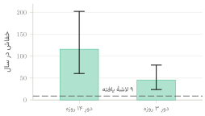
fatalities estimated from the carcasses found in year 1 (synthetic)
group found search persist p find estimate 90 % range
raptors 2 0.85 0.77 0.456 4.4 0.8 - 13.8
bats, 14-day rounds 9 0.40 0.28 0.078 116.0 60.5 - 202.4
bats, 3-day rounds 9 0.40 0.70 0.197 45.7 23.8 - 79.7
two raptors found means about 4 killed - close to the
4.8 predicted (lesson A), but two carcasses cannot tell 1 from 14
a year: the range, not the point, goes in the report;
bats vanish in days, so 14-day rounds find only 8 % of
them: 9 found means about 116 killed, while 9 found in
3-day rounds would mean 46. The search interval is set
from the persistence before the survey starts, and the
estimates feed the curtailment triggerمثال 33.14 (دو لاشه، بازهای پهن) پرسش. در سالِ نخست دو لاشهٔ پرندهٔ شکاری و نُه لاشهٔ خفاش پیدا شده است. تلفاتِ برآوردی چقدر است؟
پاسخ. پرندهٔ شکاری حدودِ 4.4 در سال، با بازهٔ 0.8 تا 13.8. خفاش با دورهای ۱۴ روزه حدودِ 116.
تفسیر. برآوردِ پرندگان به پیشبینیِ 4.8 در بخش 33.2.4 نزدیک است، اما دو لاشه نمیتوانند ۱ را از ۱۴ جدا کنند. پس گزارش بازه را میدهد، نه فقط عدد را. خفاشها در چند روز ناپدید میشوند. با دورهای ۱۴ روزه فقط 8 % آنها پیدا میشوند، پس فاصلهٔ دورها از زمانِ ماندنِ لاشه و پیش از آغازِ پیمایش تعیین میشود. برآوردها آستانهٔ توقفِ توربینها را تغذیه میکنند (بخش 33.2.5). وارسی: \(0.85 \times 0.77 \times 0.70 = 0.456\) و \(2/0.456 = 4.4\).
33.4.8 سنجشِ انطباقِ صدا بر حسبِ سرعتِ باد
ایده. میکروفون صدای کل را میسنجد: توربینها بهاضافهٔ باد، علف و جاده. صدای توربینها بهتنهایی با کمکردنِ صدای زمینه بهصورتِ انرژی به دست میآید. صدای زمینه در دورههای خاموشی اندازه گرفته میشود:
\[ L_\text{t} = 10\log_{10}\left(10^{L_\text{tot}/10} - 10^{L_\text{bg}/10}\right) \tag{33.7}\]
در این رابطه \(L_\text{tot}\) ترازِ کلِ اندازهگیریشده است، \(L_\text{bg}\) ترازِ زمینه و \(L_\text{t}\) ترازِ توربینها بهتنهایی.
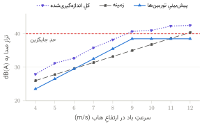
noise compliance at the camp by hub wind speed (synthetic survey)
v m/s total background turbines predicted limit 40?
4 27.9 26.0 n/a 23.5 -
5 31.2 27.8 28.5 26.5 yes
6 32.7 29.6 29.8 29.5 yes
7 35.8 31.4 33.8 32.5 yes
8 38.2 33.2 36.5 35.5 yes
9 40.7 35.0 39.4 38.5 yes
10 41.0 36.8 39.0 38.5 yes
11 42.3 38.6 39.8 38.5 yes
12 42.5 40.4 n/a 38.5 -
the turbines alone come out of each total by subtracting
the background as energy; where the total is within 3 dB
of the background (bins [4, 12] m/s) the subtraction is
unreliable and the bin is reported as not determinable;
the measured turbine level runs about 0.8 dB above the
prediction; the loudest determinable bin, 39.8 dB(A), is
under the placeholder limit - a margin under 1 dB,
so the survey is repeated in the camp's season; the
method, bins and limit come from the permit (U-112)مثال 33.15 (حاشیهای کمتر از یک دسیبل) پرسش. آیا توربینها در اردوگاه زیرِ حدِ جایگزینِ 40 dB(A) میمانند؟
پاسخ. بله، در همهٔ سرعتهایی که تعیینشدنیاند. بلندترین بازه 39.8 است. بازههای 4 و 12 m/s تعیینشدنی نیستند، چون کل کمتر از 3 dB از زمینه بیشتر است.
تفسیر. توربینها حدودِ 0.8 dB بلندتر از پیشبینیاند و حاشیه کمتر از یک دسیبل است. پس سنجش در فصلِ برپاییِ اردوگاه تکرار میشود و حالتِ کمصدا آماده میماند. روش، بازههای سرعت و حد از مجوز میآیند (U-112). وارسی: \(10\log_{10}(10^{4.23} - 10^{3.86}) \approx 39.9\)، که با در نظر گرفتنِ گردکردنِ ورودیها همان 39.8 است.
33.4.9 گزارشِ فصلی و روندِ شاخصها
the year's indicators by quarter (synthetic; R red, A amber, G green)
indicator Q1 Q2 Q3 Q4
grievances closed in 30 days % 72 R 81 R 88 A 93 G
local hires % of workforce 31 R 34 R 36 A 41 G
dust days over trigger a month 5 R 4 R 3 A 2 G
restored area with cover % 0 R 20 R 40 R 55 R
village well level change m 0.2 G 0.4 G 0.6 A 0.5 G
a trend says more than a quarter: grievances and hires
are improving and reach green; restored cover is red all
year because vegetation needs seasons (closure waits,
lesson C); the annual report shows each line with its
trend, the corrective actions and what changed because of
them - and goes to the village in the local languageایده. روند بیش از یک فصل میگوید. شکایتها، استخدامِ محلی و گرد و خاک در فصلِ چهارم سبز میشوند. پوششِ گیاهی همهٔ سال قرمز است، چون گیاه به چند فصل نیاز دارد. پس پایان منتظر میماند (بخش 33.4.6). گزارشِ سالانه هر شاخص را با روند، اقدامهای اصلاحی و تغییرهایی که از آنها آمده نشان میدهد. این گزارش به زبانِ محلی به روستا هم میرسد (بخش 33.3.2).
- معادلهٔ 33.6 را توضیح دهید.
- چرا لاشههای یافته کمتر از تلفاتاند؟
- فاصلهٔ دورهای جستوجو را چه چیزی تعیین میکند؟
- معادلهٔ 33.7 را توضیح دهید.
- چرا بازهای که کل در آن کمتر از 3 dB از زمینه بیشتر است تعیینشدنی نیست؟
- چرا پوششِ گیاهی همهٔ سال قرمز میماند؟
33.5 ت. دفترِ اثر، کاهش و پایش (مثالِ کارشده)
موقعیت. پیشنویسِ دفترِ اثر، کاهش و پایشِ نیروگاهِ P آماده است. باید آن را وارسی کرد و کنترلهای نمونه را از شرطهایی که مجوزها تعیین خواهند کرد جدا نمود.
برنامه:
python -m companion.ch33.lab_dREGISTER = [ # (id, impact, phase, before, after, mitigation, indicator,
# frequency, owner, source) source: P permit, I illustrative
("E01", "night noise at camp B", "O", "M", "L",
"reduced mode in camp months",
"LAeq at camp", "quarterly", "O&M manager", "P"),
("E02", "dust at village", "C", "M", "L",
"water, speed, wind rule",
"dust days over trigger", "daily", "site manager", "P"),
("E03", "village wells drawdown", "C,O", "H", "M",
"pumping limit, monitoring",
"well levels", "monthly", "E&S manager", "P"),
("E04", "raptor collisions", "O", "H", "M",
"siting, seasonal shutdown",
"carcass search", "weekly in season", "", "P"),
("E05", "bat collisions", "O", "M", "L", "autumn night cut-in 6 m/s",
"carcass search", "weekly in autumn", "O&M manager", "P"),
("S01", "herders' access to spring", "C,O", "H", "L",
"fence gap, crossing",
"route open, survey", "quarterly", "E&S manager", "I"),
("S02", "traffic at the school", "C", "H", "M", "truck hold, marshal",
"", "daily", "logistics lead", "I"),
("S03", "heritage near the ruin", "C", "M", "H", "re-route, archaeologist",
"watching brief log", "during works", "E&S manager", "P"),
("E06", "fire-water runoff", "O", "M", "L", "closed pond, testing",
"pond outlet log", "after events", "O&M manager", "I"),
]impact - mitigation - monitoring register of Plant P (draft)
id impact phase before after source
E01 night noise at camp B O M L P
E02 dust at village C M L P
E03 village wells drawdown C,O H M P
E04 raptor collisions O H M P
E05 bat collisions O M L P
S01 herders' access to spring C,O H L I
S02 traffic at the school C H M I
S03 heritage near the ruin C M H P
E06 fire-water runoff O M L I
checker findings: 3
E04 raptor collisions: no owner
S02 traffic at the school: no indicator
S03 heritage near the ruin: residual H above M - mitigation wrongthe register after review
checker findings: 0
rows that a permit will set (P): 6; illustrative (I): 3
P rows are drafts of conditions: the indicator, limit and
frequency are copied from the permit when it is issued,
and the register says so; I rows are the project's own
controls and can be changed through management of change
- the reader never mistakes one for the otherمثال 33.16 (مثالِ کارشده: دفترِ اثر، کاهش و پایشِ نیروگاهِ P) پرسش. دفترِ اثر، کاهش و پایشِ ویژهٔ پروژه را بسازید و وارسی کنید. کنترلهای نمونه را از شرطهایی که مجوزهای حوزهٔ قضایی تعیین خواهند کرد جدا کنید.
پاسخ.
- دفتر: نُه ردیف، شش ردیفِ محیطی و سه ردیفِ اجتماعی. هر ردیف اینها را دارد: اثر، مرحله، اهمیتِ پیش و پس از کاهش، تدبیر، شاخص، بسامد، مسئول و منبع.
- وارسی: سه یافته در پیشنویس. برخوردِ پرندگان مسئول ندارد. ترافیکِ مدرسه شاخص ندارد. میراثِ کنارِ ویرانه پس از کاهش «زیاد» شده است، یعنی تدبیر اشتباه است. پس از بازنگری، صفر یافته.
- منبع: شش ردیف شرطِ آیندهٔ مجوزند (P) و سه ردیف کنترلِ خودِ پروژه (I).
تفسیر. ردیفهای P پیشنویسِ شرطاند. شاخص، حد و بسامدشان پس از صدورِ مجوز از متنِ آن کپی میشود و دفتر این را صریح میگوید. ردیفهای I کنترلهای خودِ پروژهاند و از راهِ مدیریتِ تغییر عوض میشوند (بخش 32.6.5). خواننده هرگز یکی را با دیگری اشتباه نمیگیرد. اهمیتها داوریاند و با دلیلشان در ارزیابیِ اثر نوشته میشوند. وارسی: \(6 + 3 = 9\) ردیف.
اهمیتِ اثرها، شرطهای مجوز و برنامهٔ پایش را ارزیابیِ اثرِ تأییدشده، مقامِ مسئول و برنامهٔ وامدهندگان تعیین میکنند. ردیفهای این دفتر نمونهاند (A-382).
33.6 ث. پاسخِ محیطی به حریق
فصلِ ۳۲ پاسخِ اضطراری به حریق را ساخت. این بخش به پیامدهای محیطیِ آن میپردازد: دود، آبِ آلودهٔ آتشنشانی، پسماندهای خطرناک، آبِ حوضچه و بازسازیِ محوطه. این کارها در چارچوبِ مجوزهای محیطیِ ساختگاه و برنامههای پاسخِ تأییدشده انجام میشوند. مقدارهای غربالگری، ردههای پسماند و مسیرهای تخلیه جایگزیناند (A-383، U-114).
برنامه:
python -m companion.ch33.examples_e33.6.1 خبر دادن به جامعه
telling the community during and after a fire (teaching timeline)
minutes message
0 fire reported; site emergency plan (ch 32)
15 village leader and authority told: what, where, wind
30 advice to stay indoors comes from the authority
60 first update: smoke, roads closed, next update time
180 update every 2-3 h while smoke lasts
1440 public meeting: what happened, sampling plan, contacts
10080 sampling results shared in plain language
silence fills with rumour: the site tells people early,
says what is not yet known, and passes on the advice of
the authority - it does not invent its own; the same
grievance channel takes questions and claims (lesson H)ایده. سکوت را شایعه پر میکند. ساختگاه زود خبر میدهد، میگوید چه چیزی هنوز معلوم نیست، و توصیهٔ مقامِ مسئول را منتقل میکند. توصیهٔ خودش را نمیسازد (بخش 32.9.13). پرسشها و ادعاها از همان سازوکارِ شکایت میرسند (بخش 33.9).
33.6.2 نمونهبرداری از محوطهٔ سوخته
sampling the burnt battery yard (teaching grid)
yard 2,400 m2, one composite sample per 100 m2: 24 samples
plus 3 background samples upwind and 2 at the pond outlet
analytes (teaching): metals (Ni, Co, Mn, Cu, Al), lithium,
fluoride, hydrocarbons, PAH from burnt plastics
each result is compared with the screening values of the
permit (PLACEHOLDERS here): below -> no action; above ->
excavation of that cell and re-test - the grid tells
where, the background tells what was there before33.6.3 پسماندهای حریق
wastes a container fire leaves (teaching quantities)
waste amount route
damaged battery modules 40.0 t hazardous; maker's take-back
container steel, cleaned 12.0 t scrap, after testing
contaminated soil 60.0 m3 licensed disposal
pond water 160.0 m3 test, then treat or tanker
absorbents, PPE 1.5 t hazardous
stranded energy in the modules (ch 32) makes their removal
a specialist job; each waste is classified, packed and
tracked to a licensed receiver - the waste record is part
of the incident file the authority will ask for33.6.4 آبِ حوضچه
the water in the closed pond after a fire (teaching costs, k u)
option cost
treat on site, discharge under permit 18
note: if limits met after treatment
tanker to a licensed facility 45
note: 8 loads of 20 m3
evaporate in the lined pond 4
note: concentrates salts and metals
the cheapest option leaves a residue that is itself a
hazardous waste; the permit and the test results decide,
and nothing leaves the pond untestedمثال 33.17 (ارزانترین گزینه، پسماندِ خطرناک) پرسش. چرا تبخیر در حوضچهٔ عایق، که ارزانترین گزینه است، بهترین نیست؟
پاسخ. چون نمکها و فلزات را غلیظ میکند و پسماندی میگذارد که خودش پسماندِ خطرناک است.
تفسیر. مجوز و نتیجهٔ آزمون تصمیم میگیرند. هیچ آبی بیآزمون از حوضچه بیرون نمیرود (بخش 32.5.3). هزینهٔ تصفیه یا حمل در برنامهٔ پاسخ از پیش برآورد میشود تا در روزِ حادثه کسی برای صرفهجویی تصمیمِ بد نگیرد. وارسی: \(160/20 = 8\) بار تانکر.
33.6.5 بازسازیِ محوطه
restoring the yard after a fire (teaching steps)
1 scene released by the fire service and investigator
2 wastes removed and recorded
3 soil sampled, hot spots excavated, re-tested
4 drains and pond cleaned, outlet tested
5 new foundations or the yard capped, as the owner decides
6 results and the closure report shared with the village
the plant may restart before step 6, but the community
hears the result of steps 3 and 4 before the yard is
called clean- چرا ساختگاه توصیهٔ ماندن در خانه را خودش نمیدهد؟
- محوطهٔ 3,000 m² با یک نمونه در هر 100 m² چند نمونه میخواهد؟
- چرا نمونههای زمینه لازماند؟
- ماژولهای آسیبدیده چرا کارِ متخصصاند؟
- سه گزینهٔ آبِ حوضچه را با یک عیبِ هر کدام بنویسید.
- جامعه پیش از «پاک» نامیدنِ محوطه چه چیزی را میشنود؟
33.6.6 دود به کدام سو میرود؟
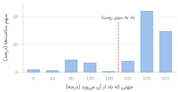
how often smoke from a battery fire would blow to the village
village centre 3.0 km at 22 deg from the battery yard
wind from 202 +/- 22.5 deg carries smoke there: 1.5 % of the hours
share of hours (%) by the direction the wind comes from:
0: 1.8 45: 1.1 90: 8.8 135: 6.6
180: 0.4 225: 7.9 270: 44.0 315: 29.4
the prevailing west and north-west winds (73 % of the
hours) carry smoke east and south-east, away from the
village; it goes there in about one hour in 65 - rare,
but a fire lasts hours and the wind turns: the plan
assumes it can, and the message to the village (lesson E)
does not wait for the wind to decideمثال 33.18 (نادر، اما فرضشده) پرسش. دودِ حریقِ محوطهٔ باتری چند درصد ساعتها به سوی روستا میرود؟
پاسخ. حدودِ 1.5 %، یعنی یک ساعت از هر ۶۵ ساعت. بادهای غالبِ غربی و شمالغربی، با 73 % ساعتها، دود را به شرق و جنوبشرق میبرند.
تفسیر. جانماییِ محوطهٔ باتری با بادِ غالب، دود را بیشترِ وقت از روستا دور میکند. این یک پرهیز است. اما حریق ساعتها طول میکشد و باد میچرخد. پس برنامه فرض میکند دود میتواند به روستا برسد و پیام به روستا منتظرِ باد نمیماند (بخش 33.6.1). توصیهٔ ماندن در خانه را مقامِ مسئول میدهد (بخش 32.9.13). وارسی: جهتِ روستا از محوطه \(\arctan(1100/2750) \approx 22^\circ\) است و باد باید از \(202^\circ\) بوزد.
- چرا جانماییِ محوطهٔ باتری با بادِ غالب یک پرهیز است؟
- چرا برنامه با وجودِ نادر بودنِ دود به سوی روستا آن را فرض میکند؟
- بادهای غالبِ ساختگاه از کدام سو میوزند؟
33.7 چ. نگهبانیِ آب
آب در بیابان مشترک است. نیروگاه از همان آبخوانی برمیدارد که روستا، دام و مزرعهها از آن زندگی میکنند. این بخش برداشتها و مصرفهای رقیب را میسنجد و پایداریِ منبع را بررسی میکند. افتِ سطحِ آبِ چاهِ روستا، برنامهٔ خشکسالی، رواناب و پساب، و شاخصهای عملکرد را هم میسنجد. تغذیه، حقابه و مجوزها از مطالعهٔ آبشناسی و مرجعِ آب میآیند (A-384، U-114). نیازهای نیروگاه همانهای فصلِ ۲۹اند.
برنامه:
python -m companion.ch33.examples_f33.7.1 چه کسی چقدر برمیدارد
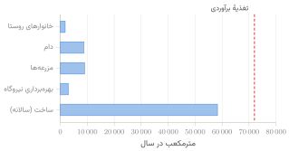
who takes water from the aquifer (m3 a year, teaching)
village households (50 x 100 L/day) 1,825
livestock (600 animals x 40 L/day) 8,760
farms 1 and 2 (irrigation, teaching) 9,000
plant operation (ch 29) 2,986
construction, per year of 18 months (ch 29) 58,307
estimated recharge (20 km2, 120 mm, 3 %): 72,000
total in operation 22,571 (31 % of recharge); in construction 80,878 (112 %)
in operation the plant is a small user beside the village
and its animals; in construction the dust water alone
would take most of the recharge - which is why it is
trucked in or replaced (ch 29), never pumped locallyمثال 33.19 (مصرفکنندهٔ کوچک، مگر در ساخت) پرسش. نیروگاه در بهرهبرداری و در ساخت چه سهمی از تغذیهٔ آبخوان را برمیدارد؟
پاسخ. در بهرهبرداری حدودِ 13 % از کلِ برداشتهای محلی، که خودِ آنها 31 % تغذیه است. در ساخت جمعِ برداشتها از تغذیه میگذرد.
تفسیر. در بهرهبرداری نیروگاه کنارِ روستا و دامش مصرفکنندهای کوچک است. در ساخت، آبِ گرد و خاک بهتنهایی بیشترِ تغذیه را میگیرد. پس این آب با تانکر آورده یا جایگزین میشود و هرگز از چاههای محلی پمپ نمیشود (فصلِ ۲۹). وارسی: \(2{,}986/22{,}571 = 13\,\%\).
33.7.2 افتِ سطحِ آبِ چاهِ روستا
ایده. روشِ کوپر–جیکوب افتِ سطحِ آب را در فاصلهٔ \(r\) از چاهی با دبیِ \(Q\)، پس از زمانِ \(t\) برآورد میکند. \(T\) قابلیتِ انتقال است و \(S\) ضریبِ ذخیره:
\[ s = \frac{Q}{4\pi T}\ln\!\left(\frac{2.25\,T\,t}{r^2 S}\right) \tag{33.8}\]
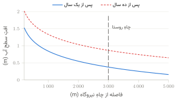
drawdown at the village well from site well W-1 (Cooper-Jacob)
pumping 0.4 L/s; T 1.5e-04 m2/s; S 2e-04
distance m after 1 year m after 10 years m
500 1.14 1.63
1500 0.67 1.16
3000 0.38 0.87
the village well about 3 km away sees a few tenths of a
metre that grow slowly over the years - small next to
the seasonal swing, but measurable: a monitoring well
between the two and an agreed trigger (lesson C) turn
the estimate into evidenceایده. چاهِ روستا در سه کیلومتری چند دهم متر افت میبیند و این افت آرام با سالها بیشتر میشود. یک چاهِ پایش میانِ دو چاه و آستانهای توافقشده (بخش 33.4.3) برآورد را به شاهد تبدیل میکنند. ضریبهای آبخوان از آزمونِ پمپاژ میآیند (فصلِ ۲۹).
33.7.3 برنامهٔ خشکسالی
drought plan for the site wells (teaching triggers)
trigger stage
level falls 0.5 m below the seasonal normal watch
action: weekly levels, cut non-essential use
level falls 1.0 m or spring flow halves restrict
action: washing paused or trucked, no dust water from wells
village well cannot meet demand emergency
action: site pumping stops, water shared with the village
pausing washing saves about 2,548 m3 a year at the cost
of soiling losses (ch 10): the plant gives way first,
because the village has no other source - triggers and
actions are agreed with the water authority and the
village before the first dry yearمثال 33.20 (نیروگاه اول کنار میکشد) پرسش. در خشکسالی چه کسی اول مصرفش را کم میکند و چرا؟
پاسخ. نیروگاه. شستوشوی ماژولها متوقف میشود یا با تانکر انجام میشود، و این حدودِ 2,500 m³ در سال صرفهجویی میکند.
تفسیر. روستا منبعِ دیگری ندارد. هزینهٔ نیروگاه افتِ ناشی از گرد و خاک است (فصلِ ۱۰). آستانهها و اقدامها پیش از نخستین سالِ خشک با مرجعِ آب و روستا توافق میشوند. وارسی: \(2{,}986 - 438 = 2{,}548\,\text{m}^3\).
33.7.4 رواناب و پساب
cleaning runoff and wastewater (teaching)
one wash: 109 m3 of treated water on 280,000 m2 of modules
= 0.39 L/m2 - it soaks in under the tables;
no detergent is used, so the runoff is clean water
RO reject (40 % of feed, saline): about 1,000 m3 a year to
a lined evaporation pond, not to the ground
staff 20 x 60 L/day = 1.2 m3/day to a septic system
construction camp (if on site, ch 32): about 30 m3/day
to a package treatment plant with a discharge permit
each stream has a route, a test and a record33.7.5 شاخصهای آب
water indicators of the operating plant (teaching)
water intensity: 13.5 L per MWh
share of washing water reused: 0 % (target 30 % by year 3)
village well level change: within the agreed trigger
the plant's intensity is tiny beside thermal plants, but
the relevant comparison is local: what its water means
to the village wells in the driest month- تغذیهٔ 20 km² با بارانِ 120 mm و 3 % تغذیه چقدر است؟
- چرا آبِ ساخت از چاههای محلی پمپ نمیشود؟
- معادلهٔ 33.8 را توضیح دهید.
- چرا افت با زمان بیشتر میشود؟
- سه پلهٔ برنامهٔ خشکسالی را بنویسید.
- پسابِ اسمزِ معکوس کجا میرود و چرا؟
- شدتِ مصرفِ آبِ نیروگاه چند لیتر بر مگاواتساعت است؟
33.7.6 شوریِ چاهِ نیروگاه
salinity of the site well W-1 (teaching trend)
electrical conductivity 1450 uS/cm at the start, rising 3 % a year
trigger (PLACEHOLDER, the village's drinking limit): 2000 uS/cm
reached after about 11 years if nothing changes
a rising salinity says the well draws older, deeper or
saltier water - the same aquifer the village drinks; the
quarterly sample is part of the water plan, and the trend,
not one value, triggers a review: less pumping, the second
well, or water brought in - long before the triggerایده. اگر شوری هر سال درصدِ ثابتی بالا برود، زمانِ رسیدن به آستانه چنین است:
\[ t = \frac{\ln(EC_\text{trig}/EC_0)}{\ln(1 + k)} \tag{33.9}\]
در این رابطه \(EC_0\) هدایتِ الکتریکیِ آغاز است، \(EC_\text{trig}\) آستانه و \(k\) نرخِ رشدِ سالانه. شوریِ رو به افزایش نشان میدهد که چاه آبِ کهنهتر، ژرفتر یا شورتر میکشد. این همان آبخوانی است که روستا از آن مینوشد. نمونهٔ فصلی بخشی از برنامهٔ آب است و روند، نه یک عدد، بازبینی را آغاز میکند: پمپاژِ کمتر، چاهِ دوم یا آبِ آوردهشده، خیلی پیش از رسیدن به آستانه. وارسی: \(\ln(2000/1450)/\ln 1.03 = 10.9\) سال.
33.7.7 بازچرخانیِ آب
water reused instead of trucked or evaporated (teaching)
construction: treated camp wastewater for dust,
30 m3/d x 0.8 x 540 d = 12,960 m3
23 % of the 57,130 m3 that would otherwise be trucked in (ch 29)
operation: RO reject 1,000 m3 a year sprayed on the gravel roads
instead of evaporated - a smaller pond, and the salt crust
binds the dust
conditions: the discharge permit allows it, the treated
water meets the reuse quality, no spraying near the farms,
the wadi or the spring, and a record of every load - reuse
is a permitted use of a waste stream, not a way around itمثال 33.21 (پساب بهجای تانکر) پرسش. پسابِ تصفیهشدهٔ اردوگاه چه سهمی از آبِ ساختی را که باید با تانکر آورده شود جایگزین میکند؟
پاسخ. حدودِ 12,960 m³، یعنی 23 % از 57,130 m³ کمبودِ فصلِ ۲۹.
تفسیر. بازچرخانی استفادهٔ مجاز از یک جریانِ پسماند است، نه راهی برای دورزدنِ مجوز. شرطها اینهاست: مجوزِ تخلیه آن را اجازه دهد، کیفیتِ آب به حدِ بازچرخانی برسد، کنارِ مزرعهها، مسیل و چشمه پاشیده نشود، و هر بار ثبت شود. پسابِ اسمزِ معکوس در بهرهبرداری روی راههای شنی پاشیده میشود. پوستهٔ نمکی گرد و خاک را میگیرد و حوضچهٔ تبخیر کوچکتر میشود. وارسی: \(30 \times 0.8 \times 540 = 12{,}960\,\text{m}^3\).
33.7.8 آبریزِ لبهٔ میزها در بهرهبرداری
rain concentrated at the drip lines of the PV tables (teaching)
a 4.6 m wide table sheds its rain onto a strip of about 0.3 m: x15
a 25 mm storm lands on that strip as 383 mm
bare, loose desert soil under the drip line gullies in a
few seasons - the posts lose cover and the access tracks
rut; gravel strips or vegetation under the drip lines
and a block graded to sheet, not channel, the water are
cheaper than repairs (erosion of the construction phase
and its sediment pond are in ch 29)ایده. میزِ 4.6 m باران را روی نواری حدودِ 0.3 m زیرِ لبهاش میریزد. بارانِ 25 mm روی این نوار مانندِ 383 mm است. خاکِ سست و برهنهٔ بیابان زیرِ این خط در چند فصل آبراهه میشود: پایهها پوششِ خاک را از دست میدهند و راههای دسترسی شیار میخورند. نوارِ شن یا گیاه زیرِ لبهٔ میزها، و تسطیحی که آب را پهن کند نه جمع، از تعمیر ارزانترند. فرسایش و حوضچهٔ رسوبگیرِ دورهٔ ساخت در فصلِ ۲۹ آمدهاند. وارسی: \(25 \times 4.6/0.3 = 383\,\text{mm}\).
- معادلهٔ 33.9 را توضیح دهید.
- با رشدِ 5 % در سال، آستانه کِی میرسد؟
- چرا روند، نه یک عدد، بازبینی را آغاز میکند؟
- چهار شرطِ بازچرخانیِ پساب را بنویسید.
- پاشیدنِ پسابِ اسمزِ معکوس روی راهها چه سودی دارد؟
- ضریبِ تمرکزِ آب در لبهٔ میز چگونه حساب میشود؟
- دو تدبیرِ فرسایشِ لبهٔ میزها را بنویسید.
33.8 ح. اجرای حفاظتهای اجتماعی
حفاظتهای اجتماعی یک گردشِ کار دارند: تعیینِ دامنه و خطمبنا، گزینهها و پرهیز، کاهش و برنامههای مدیریت، بودجه و مسئول، پایش و افشا، ممیزی و جبران، و پایان با شاهد. این بخش آن گردشِ کار را میچیند و یک موردِ ساختگیِ دسترسی به زمین و معیشت را از آغاز تا پایان دنبال میکند (A-381).
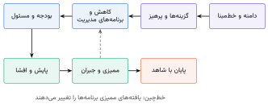
33.8.1 چهار نوع الزام
| نوع | از کجا میآید | نمونه در نیروگاهِ P |
|---|---|---|
| الزامِ قانونیِ مجوز | قانون و مقامِ مسئول | شرطهای صدا و آب در مجوز (U-112) |
| استانداردِ وامدهنده | قراردادِ وام و چارچوبش (STD-108) | سازوکارِ شکایتِ کارکنان، برنامهٔ معیشت |
| تعهدِ مالک | تصمیم و بودجهٔ مالک | دریچهٔ حصار، نقطهٔ آب، سهمِ استخدامِ محلی |
| رویهٔ خوب | تجربهٔ حرفهای | عکسهای شبیهسازیشدهٔ منظر با روستا |
ایده. هر الزام منبعِ خودش را دارد و جداکردنِ آنها مهم است. الزامِ قانونی معاملهکردنی نیست. شرطِ وامدهنده یکی از تعهدهای قراردادِ وام است. تعهدِ مالک با تصمیم و بودجهٔ مالک داده میشود. رویهٔ خوب پیشنهاد است، نه الزام (بخش 32.8.6). هیچکدام در این کتاب مشاورهٔ حقوقی نیست.
33.8.2 زمین، حقوق و مشورت
ایده. دسترسی به زمین در هر کشور فرایندِ خودش را دارد: اجاره، حقِ ارتفاق یا تملک. استفادهٔ رسمی، غیررسمی و عرفی هر کدام جایگاهِ خودش را دارد. جابهجاییِ فیزیکی یا اقتصادی، احیای معیشت و جبران، هر جا کاربرد داشته باشند، چارچوبِ حاکم را دنبال میکنند. حقوقِ مردمانِ بومی و جوامعِ دیگر، و مشورت یا رضایتِ آزاد، پیشین و آگاهانه، فقط جایی به کار میروند که چارچوبِ حاکم آنها را بخواهد. این کتاب هیچ آستانه یا فرایندِ همگانی فرض نمیکند. کارشناسانِ صلاحیتدارِ محلیِ اجتماعی و حقوقی آن را تعیین میکنند. میراثِ فرهنگی و یافتههای اتفاقی هم بخشی از همین کارند (بخش 33.3.7).
33.8.3 کار، زنجیرهٔ تأمین و جامعه
ایده. شرایطِ کارکنانِ مستقیم و پیمانکاران، صدای کارکنان و سازوکارِ شکایتشان، استخدام و اقامتگاه، هجومِ کارگری، ریسکِ کارِ کودک و کارِ اجباری، پیوند با ایمنیِ شغلی، بررسیِ تأمینکنندگان، ادعاهای استخدام و خریدِ محلی و اقدامِ اصلاحی، همه تابعِ قانونِ حاکم و الزاماتِ پروژه و وامدهندگاناند. فصلِ ۳۲ رفاهِ کارکنان و پیوند با جامعه را ساخت (بخش 32.8). این بخش بررسیِ زنجیرهٔ تأمین را افزود (بخش 33.3.6). سلامت، ایمنی و امنیتِ جامعه با کنترلهای اندازهپذیر، مسئول و پایش در همان دفترِ اثر ثبت میشوند (بخش 33.5).
33.8.4 موردِ ساختگی: دسترسی به زمین و معیشت (مثالِ کارشده)
برنامه:
python -m companion.ch33.lab_gbaseline of the herding families (survey, teaching values)
households 5; animals 600; customary grazing 780 ha (Apr-Oct)
grazing income supported: 72 k u a year
water: the spring, 1.2 km from the camp by the old route
other income: seasonal wage work, sale of dairy products
decision-makers: elders; women manage dairy and water
what the baseline must record before any works start:
incomes, animals, routes, seasons and who decides - so
that change can later be measured against itoptions for the route and the grazing (teaching costs, k u)
option cost income loss
A: do nothing (detour 3.5 km) 0 3.9/yr
worst for families
B: gap in PV fence + trench crossing 15 0.3/yr
route restored
C: new water point near the camp 40 0.1/yr
less walking than before
D: cash payment only 60 3.9/yr
income dips again later
avoidance (B) restores the livelihood at the source for
less than paying for its loss (D), and C can leave the
families better off than before - the families choose
among options that are approved and funded; whether
compensation also applies is the framework's question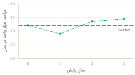
livelihood monitoring of the families (synthetic results)
year animals income k u families satisfied
0 600 72.0 -
1 590 69.0 60 %
2 610 73.5 80 %
3 620 74.4 80 %
closeout when incomes are back at the baseline (year 2)
and stay there (year 3), and when the families agree in
a final review - closure is evidence, not a datequestions the framework and local experts must answer (not this lab)
1. is customary grazing a legal right under the governing law?
2. does the framework class the fence as economic displacement?
3. are the families an Indigenous or other protected group under it?
4. if consultation or consent rules apply, what process and by whom?
5. who may sign an agreement for the families - elders, all adults?
6. what grievance and appeal route do they have outside the project?
the lab can show the impact and the options; it cannot
decide which rights apply - that needs qualified local
social and legal expertise, and no universal trigger is
assumed hereمثال 33.22 (مثالِ کارشده: دسترسی به زمین و معیشتِ دامداران) پرسش. یک موردِ ساختگیِ دسترسی به زمین و معیشت را بررسی کنید: خطمبنا، گزینهها، پایش، پایان، و پرسشهایی که چارچوب باید پاسخ دهد.
پاسخ.
- خطمبنا: پنج خانوار، ۶۰۰ دام، 780 ha چرای عرفی و 72 k u درآمد در سال. راهِ چشمه 1.2 km است و تصمیمگیرندگان را هم ثبت میکند.
- گزینهها: هیچ کاری نکردن، دریچه و گذرگاه، نقطهٔ آب، یا فقط پول. دریچه با 15 k u معیشت را در سرچشمه بازمیگرداند.
- پایش: درآمد در سالِ ۱ به 69 میافتد و در سالِ ۲ به خطمبنا برمیگردد. پایان در سالِ ۳ است، با درآمدِ پایدار و رضایتِ خانوادهها.
- پرسشهای باز: حقِ قانونیِ چرای عرفی، ردهٔ جابهجاییِ اقتصادی، گروهِ حفاظتشده، فرایندِ مشورت یا رضایت، امضاکنندهٔ توافق، و راهِ اعتراضِ بیرونی.
تفسیر. آزمایشگاه اثر و گزینهها را نشان میدهد، اما نمیتواند تعیین کند کدام حقوق اعمال میشوند. این کارِ کارشناسانِ صلاحیتدارِ محلیِ اجتماعی و حقوقی است. پایان شاهد است، نه یک تاریخ. خانوادهها از میانِ گزینههایی انتخاب میکنند که تأیید شده و بودجه دارند (مثال 33.10). وارسی: \(600 \times 0.12 = 72\,\text{k u}\).
تعیینِ حقوقِ زمین، جابهجایی، جبران، وضعِ گروههای حفاظتشده و فرایندِ مشورت یا رضایت کارِ کارشناسانِ صلاحیتدارِ محلیِ اجتماعی و حقوقی و مقامِ مسئول است. این مورد ساختگی و آموزشی است.
- چهار نوعِ الزام را با یک نمونه برای هر کدام بنویسید.
- چرا این کتاب آستانهٔ همگانی برای رضایتِ آزاد، پیشین و آگاهانه فرض نمیکند؟
- خطمبنای معیشت باید چه چیزهایی را ثبت کند؟
- چرا دریچهٔ حصار از جبرانِ پولی بهتر است؟
- پایانِ پایشِ معیشت چه وقت است؟
- شش پرسشِ چارچوب را نام ببرید.
33.8.5 کنترلِ تغییر: یک توربین ۱۵۰ متر جابهجا میشود
برنامه:
python -m companion.ch33.examples_pchange control: T06 micro-sited 150 m toward the camp (teaching)
topic before after re-assess?
night noise at camp, dB(A) 38.5 39.6 YES
flicker at camp, h/yr 0.0 0.0 no
raptor collisions a year 4.8 5.0 no
T06 now stands 656 m from the camp
a 'small' move by the civil contractor is a change to the
assessed layout: each topic has a trigger (here 1 dB, any
flicker, 10 % of collisions) written in the register, and
a change that trips one goes back to the specialist and,
if the permit says so, to the authority - before the
foundation is poured, not after (ch 32, management of change)مثال 33.23 (جابهجاییِ «کوچک») پرسش. پیمانکارِ عمرانی پیشنهاد میکند T06 برای زمینِ بهتر ۱۵۰ متر به سوی اردوگاه برود. کدام موضوع باید دوباره ارزیابی شود؟
پاسخ. صدا. صدای شبانهٔ اردوگاه از 38.5 به 39.6 dB(A) میرسد و آستانهٔ یک دسیبلی را رد میکند. سوسوی سایه صفر میماند و برخوردِ پرندگان کمتر از 10 % تغییر میکند.
تفسیر. جابهجاییِ «کوچک» تغییری در چیدمانِ ارزیابیشده است. هر موضوع آستانهای در دفتر دارد. تغییری که از آستانه بگذرد پیش از ریختنِ بتنِ پی به متخصص برمیگردد، و اگر مجوز بخواهد به مقامِ مسئول. این همان مدیریتِ تغییرِ فصلِ ۳۲ است (بخش 32.6.5). حاشیهٔ صدا تا حدِ جایگزین 0.4 dB میشود. اگر سنجشِ مثال 33.15 را هم در نظر بگیریم، حاشیه از میان میرود. وارسی: \(39.6 - 38.5 = 1.1 > 1\).
33.8.6 سوابقِ مشورت: چه کسی شنیده شد؟
who came to the consultation meetings (synthetic records)
meeting men women herders
village scoping meeting 64 6 2
draft ESIA meeting 52 9 1
women-only meeting 0 38 4
camp visit (herders) 11 9 20
farm owners and strips 12 2 0
women 32 % of all attendance (11 % at the two mixed village meetings),
against about 50 % of the affected people
herders 13 % of attendance against 8 % of the people - but
74 % of them came only when the meeting went to the camp
the mixed meetings alone would have heard almost no women
and few herders: the records show who was heard, and the
separate meetings are what made the consultation
representative - the attendance table is part of the fileایده. مشورت با شمارِ نشستها سنجیده نمیشود، بلکه با کسانی که شنیده شدند. در دو نشستِ مختلطِ روستا فقط 11 % حاضران زن بودند، در حالی که حدودِ نیمی از اثرپذیران زناند. 74 % دامدارانی که آمدند فقط وقتی آمدند که نشست به اردوگاه رفت. نشستهای جداگانه مشورت را نمایندهدار کردند. جدولِ حضور بخشی از پرونده است و به وامدهندگان و مقامِ مسئول نشان میدهد چه کسانی صدا داشتند (بخش 33.3.1).
33.8.7 دفترِ ریسکِ زمین و معیشت
land and livelihood risk register (teaching scores 1-5)
risk L I score owner
herders' route cut by the fence 4 4 16 E&S manager
control: gap and crossing
informal user left off the list 3 4 12 community liaison
control: walk-over census
customary grazing lost (3.1 ha) 5 2 10 E&S manager
control: agreement + plan
strip owner not found for easement 3 3 9 land agent
control: notice, escrow
dust on farm 1 crops 3 3 9 construction lead
control: watering, buffer
water point not maintained 2 4 8 E&S manager
control: handover, budget
the informal user and the absent owner are the risks a
title search misses; the census walks the land with the
village before any list is published (lesson B)ایده. کاربرِ غیررسمی و مالکِ غایب ریسکهاییاند که جستوجوی سند نمیبیند. سرشماری با پیمودنِ زمین همراهِ روستا، پیش از انتشارِ هر فهرست، آنها را پیدا میکند (بخش 33.3.3). مالکی که پیدا نشود اعلامیه و حسابِ امانی میگیرد، نه فراموشی. روشها و مهلتها را قانون و کارشناسانِ محلی تعیین میکنند.
33.8.8 ممیزیِ مستقلِ محیطی و اجتماعی
برنامه:
python -m companion.ch33.examples_rtwo independent E&S audits of the construction (synthetic)
audit findings major closed 60 d repeated
audit 1 (construction month 6) 14 3 64 % 0
audit 2 (construction month 12) 9 1 89 % 2
fewer findings and faster closure say the system works;
the two repeated findings say two fixes did not hold - a
repeat is raised one level (a major becomes a lender
notice) and its root cause is re-opened; the auditor is
independent of the contractor and reports to the owner
and the lenders, and the summary goes to the villageمثال 33.24 (یافتهٔ تکراری، یک پله بالاتر) پرسش. ممیزیِ دوم یافتههای کمتر و بستهشدنِ سریعتری دارد، اما دو یافتهٔ تکراری هم دارد. آنها چه میگویند؟
پاسخ. یافتهها از ۱۴ به ۹ و یافتههای عمده از ۳ به ۱ رسیدهاند. بستهشدن در ۶۰ روز از 64 % به 89 % رسیده است. اما دو اصلاح پایدار نماندند.
تفسیر. یافتهٔ تکراری یک پله بالا میرود، مثلاً یافتهٔ عمده به اطلاعیهٔ وامدهنده تبدیل میشود، و علتِ ریشهایاش دوباره باز میشود (بخش 33.4.4). ممیز از پیمانکار مستقل است، به مالک و وامدهندگان گزارش میدهد، و خلاصهٔ گزارش به روستا هم میرسد. وارسی: \(9/14 = 64\,\%\) و \(8/9 = 89\,\%\).
- چرا جابهجاییِ ۱۵۰ متریِ یک توربین تغییر به شمار میآید؟
- سه آستانهٔ بازارزیابی در مثال 33.23 کداماند؟
- مشورت را با چه چیزی باید سنجید؟
- سهمِ زنان در نشستهای مختلط چقدر بود؟
- کدام دو ریسکِ زمین را جستوجوی سند نمیبیند؟
- یافتهٔ تکراری در ممیزی چه پیامدی دارد؟
- ممیزِ مستقل به چه کسانی گزارش میدهد؟
33.9 خ. آزمایشگاهِ اجرای اجتماعی
این آزمایشگاه ابزارهای اجتماعیِ نیروگاهِ P را کنارِ هم میگذارد: گردشِ کارِ شکایت با شاهد و پیگیریِ جبران، بازبینیِ برنامهٔ اقامتگاه و ترافیکِ پیمانکار، ماتریسِ مسئولیت و بودجه، و پاسخ به یک یافتهٔ اتفاقی (A-381، A-382).
برنامه:
python -m companion.ch33.lab_h33.9.1 گردشِ کارِ شکایت با شاهد (مثالِ کارشده)
STAGES = [ # (stage, target days, evidence kept)
("received and logged", 1, "entry, channel, language"),
("acknowledged to complainant", 3, "dated message or visit note"),
("assessed and assigned", 7, "category, owner, risk"),
("investigated", 21, "site visit, photos, witnesses"),
("resolution proposed", 30, "letter in plain language"),
("agreed or escalated", 45, "signed note, or appeal opened"),
("remedy delivered and checked", 60, "proof of the remedy"),
("closed with complainant", 75, "closure note, satisfaction")]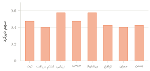
grievance workflow: stages, target days and evidence (teaching)
stage target d late %
received and logged 1 48
evidence: entry, channel, language
acknowledged to complainant 3 40
evidence: dated message or visit note
assessed and assigned 7 57
evidence: category, owner, risk
investigated 21 48
evidence: site visit, photos, witnesses
resolution proposed 30 57
evidence: letter in plain language
agreed or escalated 45 42
evidence: signed note, or appeal opened
remedy delivered and checked 60 40
evidence: proof of the remedy
closed with complainant 75 42
evidence: closure note, satisfaction
40-57 % of cases miss each stage's target: either
the targets or the staffing are wrong, and the quarterly
review fixes one of them;
each stage leaves evidence, so a closed case can be
shown, not just claimed; confidential cases (conduct,
harassment) take a protected route, and nobody who
complains is penalised (non-retaliation is stated in
every leaflet); the log is reported, anonymised, each
quarter to the community and the lendersremedy tracking: from proposal to proof (synthetic)
case remedy
dust on crops, farm 1 spray schedule, crop payment
delivered and checked: yes
blocked track to the spring fence gap opened
delivered and checked: yes
unpaid wages, subcontractor paid via main contractor, audit
delivered and checked: yes
night noise at camp reduced mode, monitoring
delivered and checked: not yet
road damage at village edge repair scheduled
delivered and checked: not yet
3 of 5 remedies proven; the others stay open in
the report until the complainant confirms - a promised
remedy is not a delivered oneمثال 33.25 (مثالِ کارشده: گردشِ کارِ ذینفعان و شکایت) پرسش. گردشِ کارِ ذینفعان و شکایت را با شاهد و پیگیریِ جبران طراحی کنید.
پاسخ.
- هشت مرحله: ثبت، اعلامِ دریافت، ارزیابی، بررسی، پیشنهاد، توافق یا ارجاع، جبران و بستن. هر مرحله هدفِ روزانه و شاهدِ خودش را دارد.
- دیرکرد: حدودِ 40 تا 57 % پروندهها در هر مرحله از هدف دیر میشوند. یا هدفها نادرستاند یا نیروی کار کم است.
- جبران: سه جبران از پنج اثبات شدهاند. دو تا تا تأییدِ شاکی در گزارش باز میمانند.
تفسیر. پروندهٔ بسته با شاهد نشان داده میشود، نه با ادعا. پروندههای محرمانه، مانندِ رفتار و آزار، از مسیرِ حفاظتشده میروند. هیچ شاکی تنبیه نمیشود و این در هر برگه نوشته شده است. گزارشِ بینام هر سه ماه به جامعه و وامدهندگان میرسد. مزایایی که تأیید نشده و بودجه ندارند هرگز وعده داده نمیشوند (مثال 33.10). وارسی: هشت مرحله در جدول.
33.9.2 بازبینیِ برنامهٔ اقامتگاه و ترافیکِ پیمانکار (مثالِ کارشده)
contractor's accommodation and community-traffic plan: review
requirement ok?
camp water from its own source NO
uses site wells (ch 32: 61 %)
rooms: space, ventilation, separate sanitation yes
plan meets lender standard
code of conduct, training, sanctions yes
signed by all workers
worker grievance channel independent of the foreman NO
foreman only
bus schedule avoids school hours yes
05:30 and 18:00
haul trucks: 30 km/h in village, marshal at school NO
no marshal
community told of the traffic calendar yes
monthly notice
3 gaps: the plan goes back with dated corrective actions
before mobilisation - water source, an independent worker
channel, a school marshal; the review and its closure are
part of the contract (lesson C, ch 32)مثال 33.26 (مثالِ کارشده: برنامهٔ اقامتگاه و ترافیکِ پیمانکار) پرسش. برنامهٔ اقامتگاهِ کارکنان و ترافیکِ جامعهٔ یک پیمانکار را ارزیابی کنید.
پاسخ. سه شکاف:
- آبِ اردوگاه از چاههای ساختگاه است، که 61 % آبدهی را میگیرد (مثال 32.30).
- سازوکارِ شکایتِ کارکنان مستقل از سرکارگر نیست.
- برای گذرگاهِ مدرسه راهنما پیشبینی نشده است.
اتاقها، آییننامهٔ رفتار، برنامهٔ اتوبوس و تقویمِ ترافیک پذیرفتهاند.
تفسیر. برنامه با اقدامهای اصلاحیِ تاریخدار، پیش از استقرار، برمیگردد. بازبینی و بستهشدنش بخشی از قرارداد است (بخش 33.4.4). وارسی: چهار مورد از هفت پذیرفتهاند.
33.9.3 ماتریسِ مسئولیت و بودجه
responsibility and budget for the E&S plan (teaching, k u a year)
item owner budget
livelihood measures (fence gap, water point) E&S manager 55
grievance mechanism (staff, phone, visits) community liaison 40
biodiversity surveys and carcass search E&S manager 90
noise and water monitoring O&M manager 35
training: conduct, induction HR manager 20
independent audit, twice a year owner 30
total 270 k u a year - about 1.3 % of the yearly revenue
a plan without a named owner and a budget line is a wish:
the matrix goes into the project budget and is auditedایده. برنامهای که مسئولِ نامبرده و ردیفِ بودجه ندارد فقط آرزوست. ماتریس به بودجهٔ پروژه میرود و ممیزی میشود. 270 k u در سال حدودِ 1.3 % درآمدِ آموزشیِ نیروگاه است.
33.9.4 پاسخ به یافتهٔ اتفاقی
response to a chance find in a cable trench (teaching timeline)
minutes action
0 excavator operator sees bones or worked stone: stops
5 supervisor fences 30 m around, no further digging there
30 E&S manager informed; photos, location, no removal
240 authority informed by the agreed route
2880 archaeologist or authority visits; community elders told
10080 decision: record, move, or re-route the works
the work moves elsewhere while the find waits; human
remains near the cemetery are treated with the community's
customs - the authority and the elders decide, and the
delay is planned for in the schedule's float- هشت مرحلهٔ گردشِ کارِ شکایت را بنویسید.
- چرا هر مرحله شاهد میخواهد؟
- شکایتِ محرمانه از کدام مسیر میرود؟
- سه شکافِ برنامهٔ پیمانکار کدام بود؟
- چرا برنامهٔ بیبودجه «آرزو» است؟
- پاسخ به یافتهٔ اتفاقی در دقیقههای نخست چیست؟
33.9.5 پاسخِ شاهدمحور به شکایتِ گرد و خاک (مثالِ کارشده)
برنامه:
python -m companion.ch33.examples_ptwo dust complaints from farmhouse A traced with the hourly wind
the PV works lie at 75 deg from the farm; dust reaches it
when the wind blows from 22.5 deg either side of that at
>= 8 m/s (100 m height) in working hours
complaint date hours toward farm mean direction deg
1 2023-04-01 4 86
2 2023-04-04 0 269
over the year such hours fall on 20 working days
complaint 1 is supported by the wind: the works were
upwind for hours - the response accepts it, waters the
block's west edge on forecast days and tells the family
what changed; complaint 2 is not supported by the wind
(it blew from elsewhere), so the response shows the
record, checks the other sources (the road, the track)
and still closes the case with the family - evidence,
not opinion, either way (lesson H)مثال 33.27 (مثالِ کارشده: دو شکایت، یک روش) پرسش. خانوادهٔ خانهٔ A دو بار از گرد و خاکِ ساخت شکایت کرده است. با بادِ ساعتیِ بستهٔ داده، پاسخِ شاهدمحور به هر دو را بسازید.
پاسخ.
- هندسه: کارهای بلوکِ خورشیدی در سمتِ 75 درجهٔ مزرعهاند. گرد و خاک وقتی میرسد که باد از ۲۲٫۵ درجه اینسو یا آنسوی این سمت بوزد، با سرعتِ دستکم 8 m/s در ساعتهای کار.
- شکایتِ ۱: چهار ساعت باد به سوی مزرعه وزید. شکایت پذیرفته میشود. لبهٔ غربیِ بلوک در روزهای پیشبینیشده آبپاشی میشود و تغییر به خانواده گفته میشود.
- شکایتِ ۲: باد از سمتِ 269 درجه، یعنی از سوی دیگر، وزید. شاهد شکایت را تأیید نمیکند. چشمههای دیگر، یعنی جاده و راهِ دسترسی، بررسی میشوند و پرونده با خانواده بسته میشود.
- سال: چنین ساعتهایی در 20 روزِ کاری رخ میدهند. برنامهٔ آبپاشی با پیشبینیِ باد هماهنگ میشود.
تفسیر. پاسخ در هر دو حالت شاهد است، نه نظر. شکایتی که شاهد تأییدش نکند هم بسته نمیشود مگر با گفتوگو و نشاندادنِ سابقه به شاکی. هیچ شاکی تنبیه نمیشود (مثال 33.25). سابقهٔ باد، فعالیتها و پاسخ در پرونده میماند و در گزارشِ فصلی شمرده میشود. وارسی: \(\arctan\big((7600 - 5600)/(2725 - 2200)\big) \approx 75^\circ\).
- سمتِ کارها از مزرعه چگونه حساب شد؟
- چرا شکایتِ ۲ با وجودِ نبودِ شاهد باز هم با گفتوگو بسته میشود؟
- چه چیزی در پروندهٔ هر شکایت میماند؟
- دادههای ساعتیِ باد چگونه برنامهٔ آبپاشی را بهتر میکنند؟
33.10 د. آزمایشگاهِ ردپای چرخهٔ عمر و گازهای گلخانهای
ردپای چرخهٔ عمر میپرسد نیروگاه در کلِ عمرش، از ساخت تا برچیدن، چقدر گازِ گلخانهای منتشر میکند و این مقدار به ازای هر کیلوواتساعت چقدر است. روشِ آن در ISO 14040 و ISO 14044 آمده است (STD-141، STD-142) و ردپای کربنِ محصول در ISO 14067:2018 (STD-143). ضریبهای این آزمایشگاه آموزشیاند و دامنهٔ مشخصی دارند (A-383).
برنامه:
python -m companion.ch33.lab_i33.10.1 هدف و دامنه
goal and scope of the footprint (stated before any number)
functional unit: 1 kWh delivered at the point of connection
reporting period: 25 years of operation, P50 energy (ch 15)
boundary: materials and manufacture, transport, construction,
operation (grid imports for own use, backup diesel; no grid
charging of the battery - S1 charges from the plant only),
replacements, end of life (credits shown separately)
factors: teaching values with a stated spread (A-383); the
real study uses supplier EPDs where verified (lesson K)
excluded: land-use change, staff travel, office overheads
every comparison below holds only inside this scopeایده. پیش از هر عدد، واحدِ کارکردی و مرزِ سامانه نوشته میشوند. هر مقایسه فقط درونِ همین دامنه معتبر است. شارژِ باتری از شبکه فقط جایی حساب میشود که سناریو اجازه دهد. اینجا S1 فقط از خودِ نیروگاه شارژ میشود (فصلِ ۲۰).
33.10.2 فهرستِ انتشار
ایده. ردپای هر قلم برابرِ مقدارِ آن ضرب در ضریبِ انتشارش است. ردپای هر کیلوواتساعت جمعِ همه تقسیم بر انرژیِ کلِ عمر است:
\[ e_\text{kWh} = \frac{\sum_i a_i f_i + M_\text{op}}{\sum_\text{life} E_\text{POC}} \tag{33.10}\]
در این رابطه \(a_i\) مقدارِ قلمِ \(i\) است، \(f_i\) ضریبِ انتشارِ آن، \(M_\text{op}\) انتشارِ دورهٔ بهرهبرداری و \(E_\text{POC}\) انرژیِ سالانه در نقطهٔ اتصال.
def inventory_total(items: dict[str, tuple[float, float]]) -> float:
"""Sum of amount x factor over the items {name: (amount, factor)}."""
return sum(a * f for a, f in items.values())
def per_kwh(total_kg: float, energy_kwh: float) -> float:
"""Grams of CO2e per kWh delivered."""
return total_kg * 1000 / energy_kwh
def inventory_mc(items: dict[str, tuple[float, float, float]], n: int = 20_000,
seed: int = 33) -> np.ndarray:
"""Monte Carlo totals; items {name: (amount, factor, cov of factor)},
each factor lognormal with its median and coefficient of variation."""
rng = np.random.default_rng(seed)
tot = np.zeros(n)
for a, f, cov in items.values():
sig = math.sqrt(math.log(1 + cov * cov))
tot += a * f * np.exp(rng.normal(0, sig, n))
return tot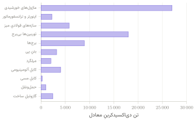
inventory of case S0 (t CO2e, teaching factors)
item amount factor t CO2e
PV modules (kWp) 60,000 450 27,000
inverters and transformers (kW) 50,000 45 2,250
PV structures, steel (t) 2,900 2,000 5,800
turbines excl. tower (MW) 60 300,000 18,000
towers, steel (t) 4,464 2,000 8,928
foundations, concrete (m3) 10,716 300 3,215
rebar (t) 1,068 1,900 2,029
cables, aluminium (t) 450 9,000 4,050
cables, copper (t) 60 4,000 240
transport, sea and road (t km x 1e3) 40,000 25 1,000
construction diesel (m3) 900 2,700 2,430
manufacture and construction 74,942
replacements (8 %) 5,995
operation over 25 years 9,315
end-of-life credit (shown apart) -3,747
modules and turbines dominate; operation is small because
the plant powers itself most of the time33.10.3 دو حالت با عدمِ قطعیت
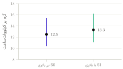
two cases per kWh with uncertainty (Monte Carlo of the factors)
case energy GWh/yr g CO2e/kWh P5 - P95 with EoL credit
S0 295.1 12.5 10.4 - 15.4 12.0
S1 293.5 13.3 11.1 - 16.2 12.7
the battery adds about a gram per kWh and its spread
overlaps the S0 range: the cases differ by less than the
factors' uncertainty, so the study reports both with
their ranges and does not rank them on the medians33.10.4 انتشارِ پرهیزشده: ادعایی جدا
avoided emissions: a claim kept apart from the inventory
counterfactual: the same energy from the regional grid mix
grid factor t/MWh avoided t CO2e/yr project t/yr (life avg)
0.3 88,530 3,610
0.5 147,550 3,610
0.7 206,570 3,610
the avoided number depends on a counterfactual that is
an assumption (which plants the energy displaces, now and
in 20 years); it is not a property of the plant, not
guaranteed, and not transferable to another grid - it is
reported with its counterfactual, never added to or
subtracted from the project's own inventoryمثال 33.28 (مثالِ کارشده: دو حالتِ ردپا با مرز و عدمِ قطعیتِ مشخص) پرسش. ردپای چرخهٔ عمرِ دو حالتِ S0 و S1 را با مرز و عدمِ قطعیتِ مشخص مقایسه کنید.
پاسخ.
- دامنه: واحدِ کارکردی یک کیلوواتساعت در نقطهٔ اتصال، دورهٔ ۲۵ ساله، و مرزی که مواد، حمل، ساخت، بهرهبرداری، جایگزینی و پایانِ عمر را دربرمیگیرد.
- فهرست: S0 حدودِ 75,000 تن برای ساخت و نصب. ماژولها و توربینها بیشترین سهم را دارند.
- مقایسه: S0 با 12.5 و S1 با 13.3 گرم بر کیلوواتساعت، با بازههای همپوشان.
- پرهیزشده: بسته به ضریبِ شبکهٔ فرضی، 88,530 تا 206,570 تن در سال، که جداگانه گزارش میشود.
تفسیر. دو حالت کمتر از عدمِ قطعیتِ ضریبها با هم فرق دارند. پس هر دو با بازهشان گزارش میشوند و بر پایهٔ میانه رتبهبندی نمیشوند. انتشارِ پرهیزشده به فرضِ جانشینی بستگی دارد، یعنی اینکه انرژی جای کدام نیروگاهها را، امروز و در بیست سالِ آینده، میگیرد. این عدد ویژگیِ نیروگاه نیست، تضمینشده نیست و به شبکهٔ دیگر منتقلپذیر نیست. پس هرگز به فهرستِ خودِ پروژه افزوده یا از آن کم نمیشود. اعتبارِ بازیافتِ پایانِ عمر هم جداگانه نشان داده میشود. وارسی: \(295{,}100 \times 0.5 = 147{,}550\) تن در سال.
- واحدِ کارکردی و مرزِ سامانه را تعریف کنید.
- چرا شارژِ باتری از شبکه فقط در برخی سناریوها حساب میشود؟
- ردپای ماژولها در این فهرست چقدر است؟
- معادلهٔ 33.10 را توضیح دهید.
- چرا دو حالت بر پایهٔ میانه رتبهبندی نمیشوند؟
- چرا انتشارِ پرهیزشده از فهرستِ پروژه کم نمیشود؟
- اعتبارِ بازیافتِ پایانِ عمر چگونه گزارش میشود؟
33.10.5 تخصیصِ فولادِ بازیافتی
برنامه:
python -m companion.ch33.examples_p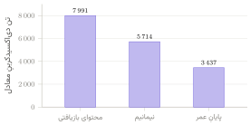
allocation of recycled steel for the towers (teaching factors)
primary 2300 kg/t, scrap route 600 kg/t; content 30 %, recycled at end 90 %
method kg CO2e/t towers t CO2e
cut-off (recycled content) 1790 7,991
50:50 1280 5,714
end-of-life (avoided burden) 770 3,437
the same towers carry 2.3 times more carbon under
one rule than under another; neither is wrong - the study
states its rule, applies it to every item, keeps the
end-of-life credit apart (lab I) and shows the other rule
as a sensitivityمثال 33.29 (یک برج، سه عدد) پرسش. ردپای فولادِ برجها با قاعدهٔ محتوای بازیافتی و با قاعدهٔ پایانِ عمر چقدر است؟
پاسخ. 7,991 و 3,437 تن، یعنی 2.3 برابر اختلاف.
تفسیر. قاعدهٔ محتوای بازیافتی فولادِ قراضه را در ورودی ارزان میشمارد. قاعدهٔ پایانِ عمر برای فولادی که پس از برچیدن بازیافت میشود اعتبار میدهد. هیچکدام نادرست نیست. مطالعه قاعدهاش را مینویسد، آن را روی همهٔ قلمها به کار میبرد، اعتبارِ پایانِ عمر را جدا نگه میدارد و قاعدهٔ دیگر را بهعنوانِ حساسیت نشان میدهد (ISO 14044، STD-142). وارسی: \(2{,}300 - (2{,}300 - 600) \times 0.9 = 770\,\text{kg/t}\).
33.10.6 شبکه در گذرِ سالها و شارژ از شبکه
the grid behind the plant's imports, and grid charging (teaching)
own-use imports 702 MWh a year
grid factor constant 0.5: 8,775 t over 25 years
falling 0.5 -> 0.2 over 25 years: 6,142 t (0.36 g/kWh less)
S1 if 30 % of its charging came from the grid (NOT the base
scenario): 45,000 t = 6.1 g/kWh more
the grid's future matters little for a plant that powers
itself; grid charging would matter a lot, which is why it
is counted only where a scenario permits it and is stated
in the scope (lab I)ایده. نیروگاهی که بیشترِ وقت خودش را تأمین میکند از آیندهٔ شبکه کم اثر میپذیرد: کمتر از 0.4 g/kWh. اما اگر S1 سی درصدِ شارژش را از شبکه بگیرد، 6.1 g/kWh افزوده میشود، یعنی نیمی از کلِ ردپا. برای همین شارژ از شبکه فقط جایی شمرده میشود که سناریو اجازه دهد و در دامنه نوشته میشود (بخش 33.10.1). سناریوی پایهٔ S1 فقط از خودِ نیروگاه شارژ میشود (فصلِ ۲۰).
33.10.7 خاستگاهِ ضریب: شبکهٔ کارخانه
a module's footprint and the grid of its factory (teaching)
factory grid t/MWh kg CO2e/kWp 60 MWp t CO2e
0.3 300 18,000
0.6 450 27,000
0.8 550 33,000
the generic 450 kg/kWp of lab I matches a factory on a
grid of about 0.6; the same module from a factory on a
clean grid is a third lower - a factor's year and place
must match the product bought, or the study measures a
different module (lesson K)ایده. ضریبِ عمومیِ 450 kg/kWp با کارخانهای روی شبکهای با حدودِ 0.6 t/MWh جور است. همان ماژول از کارخانهای روی شبکهٔ پاک یکسوم کمتر است. سال و جای ضریب باید با محصولی که خریده میشود جور باشد، وگرنه مطالعه ماژولِ دیگری را میسنجد (بخش 33.11.2).
33.10.8 جایگزینیها قلم به قلم
replacements over 25 years, item by item (teaching)
item t CO2e
inverters (half the item), year 13 1,125
turbine major parts (10 %) 1,800
modules broken or failed (1 %) 270
cables and transformers 0
total 3,195 t = 4.3 % of manufacture and construction
lab I assumed 8 %: the item-by-item list is lower, so the
8 % is cautious - the study states which it used and why,
and S1 adds its battery augmentation separately (ch 19)ایده. فهرستِ قلمبهقلم 4.3 % میدهد و آزمایشگاهِ د 8 % فرض کرده بود. پس فرضِ آزمایشگاه محتاطانه است. مطالعه مینویسد کدام را به کار برده و چرا. افزایشِ باتریِ S1 جداگانه شمرده میشود (فصلِ ۱۹). بازتوانیِ پس از ۲۵ سال در فصلِ ۵۳ میآید.
- دو قاعدهٔ تخصیصِ بازیافت را توضیح دهید.
- ردپای نیمانیم برای برجها چقدر است؟
- چرا آیندهٔ شبکه برای این نیروگاه کماثر است؟
- چرا شارژ از شبکه فقط در برخی سناریوها شمرده میشود؟
- ماژولی از کارخانهای روی شبکهٔ 0.8 t/MWh چه ردپایی دارد؟
- چرا فرضِ 8 % برای جایگزینیها محتاطانه است؟
33.11 ساخت و تولیدِ صنعتی: اظهارنامههای محیطیِ تأمینکنندگان
بیشترِ ردپای نیروگاه در کارخانهها ساخته میشود: ماژول، توربین، برج، کابل و ترانسفورماتور. خریدار این ردپا را از اظهارنامهٔ محیطیِ محصول میبیند. این سندی است که نتیجههای ارزیابیِ چرخهٔ عمرِ یک محصول را با قاعدههای یک دستهٔ محصول گزارش میکند. اصولِ آن در ISO 14025:2026 آمده است (STD-145). این بخش نشان میدهد دادهٔ تأمینکننده کِی جای ضریبِ عمومی را میگیرد، دو اظهارنامه کِی مقایسهپذیرند، و تلاشِ بهتر کردنِ داده کجا بیشترین اثر را دارد (A-383).
برنامه:
python -m companion.ch33.examples_k33.11.1 ضریبِ عمومی یا دادهٔ تأمینکننده
PV module footprint: generic factor or supplier data? (kg CO2e/kWp)
source value quality cov t CO2e
generic factor (database) 450 generic 0.30 27,000
supplier S1, verified declaration 350 verified 0.10 21,000
supplier S2, self-declared 300 unverified 0.30 18,000
S2's lower number cannot be used as if it were S1's: it is
unverified, and its uncertainty stays as wide as a generic
factor's. Verified supplier data narrows the study and can
be written into the purchase contract (ch 38-40)مثال 33.30 (عددِ کوچکتر، اما بیشاهد) پرسش. تأمینکنندهٔ S2 برای ماژول 300 kg CO₂e/kWp اعلام میکند و S1 با اظهارنامهٔ وارسیشده 350. کدام را میتوان در مطالعه به کار برد؟
پاسخ. عددِ S1، با ضریبِ تغییراتِ 0.10. عددِ S2 وارسی نشده است و عدمِ قطعیتش به اندازهٔ ضریبِ عمومی، یعنی 0.30، میماند.
تفسیر. عددِ کوچکترِ بیشاهد ادعاست، نه داده. اگر خریدار بخواهد بر پایهٔ کربن انتخاب کند، اظهارنامهٔ وارسیشده را در مناقصه میخواهد و عددِ اعلامشده را در قرارداد مینویسد، با آزمونِ پذیرشی که آن را بسنجد (فصلهای ۳۸ تا ۴۰). وارسی: \(60{,}000 \times 0.35 = 21{,}000\) تن.
33.11.2 مقایسهپذیریِ دو اظهارنامه
can the two module declarations be compared? (teaching checklist)
yes same functional unit (1 kWp of modules at the gate)
yes same product category rules
yes same system boundary (cradle to gate)
NO same reference year and grid of manufacture
NO both verified by a third party
two failed conditions: the comparison is not valid as it
stands - the manufacturing grid alone can move a module's
footprint by a third; the buyer asks for updated, verified
declarations before ranking suppliers on carbonایده. دو اظهارنامه فقط وقتی مقایسهپذیرند که واحدِ کارکردی، قاعدههای دستهٔ محصول، مرزِ سامانه، سالِ مبنا و شبکهٔ برقِ کارخانه یکسان باشند و هر دو را شخصِ ثالث وارسی کرده باشد. برقِ کارخانه بهتنهایی میتواند ردپای ماژول را یکسوم جابهجا کند. پس اظهارنامهٔ کهنه از کارخانهای دیگر هیچ چیزی دربارهٔ محصولی که امروز خریده میشود نمیگوید.
33.11.3 کیفیتِ داده و عدمِ قطعیتِ مطالعه
ایده. اگر ضریبها مستقل باشند، واریانسِ جمع برابرِ جمعِ واریانسهاست. سهمِ هر قلم از واریانس با مجذورِ سهمش از ردپا ضرب در مجذورِ ضریبِ تغییراتش رشد میکند:
\[ \mathrm{CoV}_\text{tot}^2 = \sum_i w_i^2\,\mathrm{CoV}_i^2 \tag{33.11}\]
در این رابطه \(w_i\) سهمِ قلمِ \(i\) از ردپاست.
how data quality sets the study's uncertainty (shares of the total)
item cov share contribution to variance
modules 0.10 0.36 11 %
turbines 0.30 0.24 45 %
towers 0.20 0.12 5 %
foundations 0.25 0.07 3 %
cables 0.30 0.06 3 %
others 0.40 0.15 33 %
combined coefficient of variation: 11 %
with verified module data, the turbines and the mixed
'others' (structures, inverters, diesel, transport) carry
most of the variance: better data there narrows the
result most - effort goes where the variance isمثال 33.31 (تلاش جایی که واریانس است) پرسش. پس از وارسیِ دادهٔ ماژول، بهتر کردنِ دادهٔ کدام قلم عدمِ قطعیتِ مطالعه را بیشتر کم میکند؟
پاسخ. توربینها، با 45 % از واریانس، و پس از آن «بقیه»، با 33 %. ماژولها با وجودِ بزرگترین سهم از ردپا فقط 11 % از واریانس را دارند.
تفسیر. بزرگترین قلم همیشه نامزدِ بهتر کردن نیست. قلمی که عدمِ قطعیتِ زیادی دارد و سهمِ متوسطی از ردپا، بیشتر وزن میگیرد. درخواستِ اظهارنامهٔ وارسیشده از سازندهٔ توربین گامِ بعدیِ خرید است. وارسی: \(\sqrt{0.036^2 + 0.072^2 + \dots} \approx 0.11\).
- اظهارنامهٔ محیطیِ محصول چه چیزی را گزارش میکند؟
- چرا عددِ کوچکترِ وارسینشده جای عددِ وارسیشده را نمیگیرد؟
- پنج شرطِ مقایسهپذیریِ دو اظهارنامه را بنویسید.
- چرا شبکهٔ برقِ کارخانه مهم است؟
- معادلهٔ 33.11 را توضیح دهید.
- چرا توربینها بیشترین سهمِ واریانس را دارند؟
33.12 نیروگاهِ P: سه مثالِ یکپارچه
برنامه:
python -m companion.ch33.integratedمثال 33.32 (مقدماتی: دو نتیجه با دست) پرسش. صدای نزدیکترین توربین در اردوگاه و ردپای ماژولها را با دست حساب و با کد مقایسه کنید.
two environmental results checked by hand
one turbine at 806 m: 106 - 20 log10(806) - 11 - 2 x 0.806 = 35.3 dB(A);
code 35.3
modules: 60,000 kWp x 450 kg = 27,000 t of 74,942 t (S0 manufacture)
a hand check of one term guards the sums of the whole
inventory against a wrong unit or exponentپاسخ. 35.3 dB(A) و 27,000 تن، هر دو برابر با کد.
تفسیر. وارسیِ دستیِ یک جمله از هر جمعِ بزرگ، مانندِ یک توربین از دوازده یا یک قلم از فهرست، در برابرِ واحد یا توانِ اشتباهِ ده محافظت میکند. وارسی: \(20\log_{10}806 = 58.1\).
مثال 33.33 (میانی: بستهٔ محیطی و اجتماعی در عدد) پرسش. بستهٔ محیطی و اجتماعیِ نیروگاهِ P چه اندازهای دارد؟
the environmental and social package of Plant P in numbers
register rows: 9; draft findings 3; permit rows 6
receptors under the night-noise placeholder: 5 of 5
flicker at the dwellings with W2b: 0 h (W2: 112 h at the camp)
raptor collisions estimated: about 5 a year (study first)
bat curtailment: about 1 % of wind energy
land: 147 ha taken, 3.1 ha of customary grazing, one route
water: plant 13 % of local withdrawals in operation;
construction water trucked in, never pumped locally
footprint: about 12.5 g CO2e/kWh (S0), 13.3 (S1), ranges overlap
budget of the E&S plan: 270 k u a year, 1.3 % of revenueتفسیر. بیشترِ عددهای بسته کوچکاند و جایگزین. ارزشِ بسته در دفتر، مسئول، بودجه و شاهد است، نه در دقتِ عددها. مطالعهها و مجوزها عددها را جایگزین میکنند و دفتر همان میماند. وارسی: نُه ردیف در دفتر و پنج گیرنده.
مثال 33.34 (یکپارچه: مبنای محیطی و اجتماعیِ نیروگاهِ P) پرسش. مبنای محیطی و اجتماعی را با یافتهها و موردهای باز بنویسید.
D-037 environmental and social basis of Plant P (teaching)
1 assessment: screening, noise with background, flicker
avoided by W2b, raptor study before the final layout,
bat cut-in on autumn nights, visibility accepted with
photomontages, cumulative effects with other projects
2 people: stakeholder map, disclosure ahead of decisions,
land register with customary use, herders' route kept
(fence gap), water point offered, commitments only if
approved and funded
3 monitoring: register E01-E06, S01-S03 with owners and
indicators; P rows wait for the permit text
4 fire aftermath: communication, sampling grid, waste
routes, pond tested before any release
5 water: village first in drought, monitoring well,
construction water from outside the aquifer
6 footprint: functional unit 1 kWh at the POC, inventory
and avoided emissions reported apart, supplier data
verified before it replaces generic factors
7 change control: triggers per topic (1 dB, any flicker,
10 % of collisions); T06's 150 m move trips the noise one
8 monitoring: bat carcass rounds every 3 days, raptor
rounds every 14; noise survey repeated in the camp's
season (margin under 1 dB); quarterly RAG report
9 community: no night convoys through the village (trucks
add 4.2 dB), site medic, verified local-content numbers,
trained guards only, detection-activated lights if allowed
open: permit conditions (U-112), raptor and bat surveys
(U-113), aquifer recharge and rights (U-114); the
framework's answers on land and consultation (lab G)تفسیر. این تصمیمِ D-037 است. یافتههایی که به فصلهای دیگر برمیگردند:
- حریمِ ویرانه با کارهای مسیرِ خطِ صادرات شکسته شده است. مسیرِ فصلِ ۱۴ یا جابهجا میشود یا زیرِ نظرِ باستانشناس اجرا میشود.
- برخوردِ پرندگانِ شکاری حدودِ پنج در سال برآورد شده است. پس چیدمانِ W2b تا پیمایشِ میدانی نهایی نیست، همانطور که W1 منتظرِ آن بود (فصلِ ۱۴).
- آبِ ساخت از تغذیهٔ آبخوان بیشتر است. این یافتهٔ فصلِ ۲۹ را تأیید میکند: آبِ ساخت از بیرونِ آبخوان میآید.
- برنامهٔ اقامتگاه و ترافیکِ پیمانکار سه شکاف دارد و پیش از استقرار بازمیگردد (فصلِ ۳۲).
- تفاوتِ ردپای S0 و S1 درونِ عدمِ قطعیت است. پس ردپا معیارِ انتخابِ باتری نیست و تصمیمِ D-025 دربارهٔ باتری بر جای خود میماند (فصلِ ۲۱).
- کامیونهای ساخت صدای جادهٔ روستا را 4.2 dB بالا میبرند. پس برنامهٔ ترافیکِ فصلهای ۳۱ و ۳۲ کاروانِ شبانه از درونِ روستا را، جز بارهای سنگین، کنار میگذارد.
- حاشیهٔ صدای اردوگاه کمتر از یک دسیبل است. پس هر جابهجاییِ توربین در ریزجانمایی (فصلهای ۱۴ و ۳۰) از راهِ کنترلِ تغییر میگذرد (مثال 33.23).
- فاصلهٔ دورهای جستوجوی لاشهٔ خفاش سه روز است، نه چهارده روز. این در برنامه و بودجهٔ پایش ثبت میشود (بخش 33.9.3).
33.13 عددهای کلیدیِ محیطی و اجتماعیِ نیروگاهِ P
| کمیت | مقدار | مثال |
|---|---|---|
| صدای شبانه در اردوگاه / زمینه | 38.5 / 28 dB(A) | مثال 33.1 |
| سوسوی سایه در خانهها با W2b | 0 h | بخش 33.2.3 |
| برخوردِ پرندگانِ شکاری؛ سهمِ چهار توربین | حدودِ ۵ در سال؛ 61 % | مثال 33.2 |
| انرژیِ ازدسترفته با توقفِ شبانه برای خفاشها | 0.96 % | بخش 33.2.5 |
| زمینِ گرفتهشده | 146.8 ha | بخش 33.2.6 |
| راهِ اضافهٔ روزانهٔ دامداران بیدریچه | 4.6 km | مثال 33.8 |
| روزهای پیمایش برای توانِ 80 % | حدودِ ۲۰ | مثال 33.13 |
| برداشتِ بهرهبرداری / ساخت از تغذیه | 31 % / 112 % | مثال 33.19 |
| افتِ سطحِ آبِ چاهِ روستا پس از یک سال | 0.38 m | بخش 33.7.2 |
| ردپای S0 / S1 بر کیلوواتساعت | 12.5 / 13.3 g | مثال 33.28 |
| بودجهٔ برنامهٔ محیطی و اجتماعی | 270 k u در سال | بخش 33.9.3 |
33.14 گردشِ کارِ محیطی و اجتماعی
- غربالگری و تعیینِ دامنه با مقامِ مسئول و جامعه؛ خطمبنا پیش از ساخت (بخش 33.2).
- سنجشِ اثرها با عدد و با پروژههای دیگر: صدا، سوسوی سایه، پرندگان، خفاشها، زیستگاه، منظر (بخش 33.2).
- نقشهٔ ذینفعان، افشا پیش از تصمیم، دفترِ زمین، معیشت، گروههای آسیبپذیر، زنجیرهٔ تأمین، میراث (بخش 33.3).
- سلسلهمراتبِ کاهشِ اثر، شاخصها، اقدامهای اصلاحی، تلاشِ پایش و معیارهای پایان (بخش 33.4).
- دفترِ اثر، کاهش و پایش با ردیفهای مجوز جدا از کنترلهای پروژه (بخش 33.5).
- پاسخِ محیطی به رویدادها: خبر، نمونهبرداری، پسماند، حوضچه، بازسازی (بخش 33.6).
- نگهبانیِ آب: سهم از تغذیه، افتِ سطحِ آب، برنامهٔ خشکسالی، پساب، شاخصها (بخش 33.7).
- حفاظتهای اجتماعی تا پایان با شاهد؛ پرسشهای چارچوب با کارشناسانِ محلی (بخش 33.8، بخش 33.9).
- ردپای چرخهٔ عمر با مرز و عدمِ قطعیت؛ انتشارِ پرهیزشده جدا (بخش 33.10، بخش 33.11).
33.15 آزمایشگاههای پایتونِ این فصل
| آزمایشگاه | برنامه | آنچه میسازد |
|---|---|---|
| داده | sources | توربینها، گیرندهها، پرندگان، زمین، فهرستِ انتشار |
| خطمبنا و ارزیابی | examples_a | غربالگری، صدا، سوسوی سایه، پرندگان، خفاشها، زیستگاه، منظر، انباشته |
| ذینفعان | examples_b | نقشه، افشا، زمین، معیشت، آسیبپذیرها، تأمین، میراث، تعهدها |
| کاهش و پایش | examples_c | مسیرها، شاخصها، اقدامِ اصلاحی، توانِ پایش، پایان |
| آزمایشگاهِ ت | lab_d | دفترِ اثر، کاهش و پایش با وارسی |
| پس از حریق | examples_e | خبر، نمونهبرداری، پسماند، حوضچه، بازسازی |
| آب | examples_f | برداشتها، افتِ سطحِ آب، خشکسالی، پساب، شاخصها |
| آزمایشگاهِ ح | lab_g | خطمبنا، گزینهها، پایش و پرسشهای موردِ زمین |
| آزمایشگاهِ خ | lab_h | گردشِ کارِ شکایت، جبران، برنامهٔ پیمانکار، بودجه، یافتهٔ اتفاقی |
| آزمایشگاهِ د | lab_i | دامنه، فهرست، دو حالت، انتشارِ پرهیزشده |
| ساخت و تولید | examples_k | دادهٔ تأمینکننده، مقایسهپذیری، کیفیتِ داده |
| نیروگاهِ P | integrated | با دست، بسته، مبنای D-037 |
| مثالها و پاسخها | worked | سطرهای E01 و P01 به بعد |
ماژولِ تازهٔ envsocial با چهار آزمون در برابرِ حسابِ دستی پایهٔ این برنامههاست. چیدمان، گیرندهها و زمین از فصلِ ۱۴ میآیند. نیروی کار از فصلِ ۲۲، آب از فصلِ ۲۹، ترافیک از فصلِ ۳۱، شکایتها از فصلِ ۳۲ و سالِ ساعتیِ باد از بستهٔ داده.
33.16 جعبهٔ استاندارد و انطباق
- نظامِ مدیریتِ محیطی: ISO 14001:2026 (STD-144)، که در 2026 جای ویرایشِ 2015 را گرفت و دورهٔ گذار دارد.
- ارزیابیِ چرخهٔ عمر: ISO 14040:2006 و ISO 14044:2006 با اصلاحیههایشان (STD-141، STD-142). ردپای کربنِ محصول: ISO 14067:2018 (STD-143). اظهارنامهٔ محیطیِ محصول: ISO 14025:2026، ویرایشِ دوم که جانشینِ ویرایشِ ۲۰۰۶ شده است (STD-145).
- عملکردِ محیطی و اجتماعی در پروژههای وامگرفته: استانداردهای عملکردِ IFC و اصولِ استوا (STD-108، STD-109)، فقط وقتی قراردادِ وام آنها را بخواهد.
- ارزیابیِ اثر، مجوزها، حقوقِ زمین، حقابه، میراث و مشورت از قانونِ کشور و مقامِ مسئول میآیند. فصلهای ۵۵ تا ۵۷ قاعدههای کشوری را بررسی میکنند.
- هیچ عددی در این فصل حد، شرطِ مجوز یا نتیجهٔ ارزیابیِ اثرِ تأییدشده نیست. (وارسیشده 2026-11-16.)
33.17 تحویلدادنیِ نیروگاهِ P
| سند | محتوا | معیارِ پذیرش |
|---|---|---|
| PLP-GEN-REP-0011 | خطمبنا و خلاصهٔ ارزیابیِ اثرها | هر اثر با منبع، روش و وضعِ عدد |
| PLP-GEN-REG-0007 | دفترِ اثر، کاهش و پایش | هر ردیف با مسئول و شاخص؛ ردیفهای مجوز نشاندار |
| PLP-PRJ-PRO-0005 | برنامهٔ درگیرسازیِ ذینفعان و گردشِ کارِ شکایت | هر مرحله با هدف و شاهد؛ مسیرِ محرمانه |
| PLP-PRJ-REG-0018 | دفترِ زمین، معیشت و تعهدها | کاربریِ عرفی ثبتشده؛ فقط تعهدهای تأییدشده و بودجهدار |
| PLP-GEN-PRO-0003 | برنامهٔ نگهبانیِ آب و خشکسالی | آستانهها توافقشده با مرجعِ آب و روستا |
| PLP-GEN-PRO-0004 | برنامهٔ پاسخِ محیطی به رویدادها | نمونهبرداری، پسماند، حوضچه و خبر با مالک |
| PLP-GEN-REP-0012 | ردپای چرخهٔ عمرِ S0 و S1 | مرز و عدمِ قطعیتِ مشخص؛ انتشارِ پرهیزشده جدا |
این فصل اینها را به پروندهٔ نیروگاهِ P میافزاید:
- تصمیمِ D-037: مبنای محیطی و اجتماعی (مثال 33.34).
- فرضهای A-376 تا A-384:
- A-376: غربالگری و امتیازها.
- A-377: توانِ صوتی، جذبِ هوا، حدِ جایگزین و صدای زمینه.
- A-378: گذرهای پرندگان، احتمالِ برخورد و دوری، رفتارِ خفاشها.
- A-379: زیستگاه و نسبتهای جبران.
- A-380: نقشهٔ ذینفعان، دفترِ زمین و گیرندههای میراث.
- A-381: خانوارها، دام، درآمد و گزینههای معیشت.
- A-382: دفترِ اثر، شاخصها، شکایتها و بودجه.
- A-383: ضریبهای انتشار، ضریبِ شبکه و پاسخِ پس از حریق.
- A-384: برداشتها، تغذیه و ضریبهای آبخوان.
- مجهولها: شرطهای مجوزهای محیطی (U-112)؛ پیمایشِ پرندگانِ شکاری و خفاشها (U-113)؛ تغذیهٔ آبخوان و حقابه (U-114).
- یافتهها: حریمِ ویرانه، برخوردِ پرندگان، آبِ ساخت، برنامهٔ پیمانکار و ردپای دو حالت.
- کتابخانهٔ همراه: ماژولِ
envsocialبا آزمونها و برنامههای فصلِ ۳۳.
33.18 جمعبندی
- خطمبنا و ارزیابی: غربالگری مطالعهها را جهت میدهد؛ دسیبلها بهصورتِ انرژی جمع میشوند و صدای زیرِ حد هم شنیدنی است؛ سوسوی سایه با جانمایی حذف شد؛ چهار توربین بیشترِ برخوردهای پرندگان را دارند؛ توقفِ شبانه برای خفاشها کمتر از یک درصد انرژی میگیرد؛ دیدهشدن روی دشت اجتنابپذیر نیست؛ اثرِ انباشته با پروژههای دیگر (بخش 33.2).
- ذینفعان: اثرپذیرِ کمصدا بیشترین درگیرسازی را میگیرد؛ افشا پیش از تصمیم و به زبانِ محلی؛ دفترِ زمین کاربریِ عرفی را هم ثبت میکند؛ دریچهای در حصار معیشت را در سرچشمه حفظ میکند؛ ریسکِ کار در عمقِ زنجیرهٔ تأمین؛ حریمِ میراث و قاعدهٔ یافتهٔ اتفاقی؛ فقط تعهدهای تأییدشده و بودجهدار (بخش 33.3).
- کاهش و پایش: مسیرِ اثر را بشکنید؛ پرهیز پیش از کاهش، بازسازی و جبران؛ شاخص با هدف، رواداری و مسئول؛ بستهشدن یعنی علت رفع شده؛ تلاشِ پایش از تغییری که باید دیده شود؛ پایان با شاهد (بخش 33.4).
- دفتر: ردیفهای مجوز جدا از کنترلهای پروژه؛ سه قاعدهٔ وارسی (بخش 33.5).
- پس از حریق: خبرِ زود؛ شبکهٔ نمونهبرداری با نمونههای زمینه؛ هر پسماند با مسیر و سند؛ هیچ آبی بیآزمون از حوضچه بیرون نمیرود (بخش 33.6).
- آب: نیروگاه در بهرهبرداری مصرفکنندهای کوچک است و در ساخت نه؛ افتِ سطحِ آبِ چاهِ روستا با چاهِ پایش؛ نیروگاه اول کنار میکشد (بخش 33.7).
- حفاظتهای اجتماعی: چهار نوع الزام از هم جدا؛ هیچ فرایندِ همگانی برای زمین، مردمانِ بومی یا رضایت فرض نمیشود؛ گردشِ کارِ شکایت با شاهد؛ برنامهٔ پیمانکار پیش از استقرار بازبینی میشود (بخش 33.8، بخش 33.9).
- ردپا: دامنه پیش از عدد؛ ماژولها و توربینها غالباند؛ دو حالت درونِ عدمِ قطعیت؛ انتشارِ پرهیزشده جدا و تضمیننشده؛ دادهٔ تأمینکننده فقط وارسیشده (بخش 33.10، بخش 33.11).
33.18.1 واژگانِ فصلِ ۳۳
| فارسی | انگلیسی | یادداشت |
|---|---|---|
| خطمبنا | baseline | |
| غربالگری | screening | |
| تعیینِ دامنه | scoping | |
| ارزیابیِ اثرهای محیطی و اجتماعی | environmental and social impact assessment | ESIA |
| گیرنده | receptor | |
| مسیرِ اثر | impact pathway | |
| ترازِ توانِ صوتی | sound power level | |
| صدای زمینه | background noise | |
| سوسوی سایه | shadow flicker | |
| ریسکِ برخورد | collision risk | |
| سرعتِ شروعِ کار | cut-in wind speed | |
| اثرِ انباشته | cumulative impact | |
| عکسِ شبیهسازیشده | photomontage | |
| جبرانِ تنوعِ زیستی | biodiversity offset | |
| سلسلهمراتبِ کاهشِ اثر | mitigation hierarchy | |
| اقدامِ اصلاحی | corrective action | |
| توانِ آزمون | statistical power | |
| معیارهای پایان | closure criteria | |
| ذینفع | stakeholder | |
| افشا | disclosure | |
| کاربریِ عرفی | customary use | |
| معیشت | livelihood | |
| جابهجاییِ اقتصادی | economic displacement | |
| گروههای آسیبپذیر | vulnerable groups | |
| هجومِ کارگری | labour influx | |
| بررسیِ زنجیرهٔ تأمین | supply-chain due diligence | |
| کارِ اجباری | forced labour | |
| یافتهٔ اتفاقی | chance find | |
| دفترِ تعهدها | commitments register | |
| رضایتِ آزاد، پیشین و آگاهانه | free, prior and informed consent | FPIC |
| آبخوان | aquifer | |
| تغذیهٔ آبخوان | recharge | |
| افتِ سطحِ آب | drawdown | |
| شدتِ مصرفِ آب | water intensity | |
| ارزیابیِ چرخهٔ عمر | life cycle assessment | LCA |
| واحدِ کارکردی | functional unit | |
| مرزِ سامانه | system boundary | |
| ضریبِ انتشار | emission factor | |
| انتشارِ پرهیزشده | avoided emissions | |
| فرضِ جانشینی | counterfactual | |
| اظهارنامهٔ محیطیِ محصول | environmental product declaration | EPD |
| قاعدههای دستهٔ محصول | product category rules | PCR |
33.19 ارزیابیِ پلکانی
معیارِ تسلطِ این فصل: خواننده میتواند اثرهای یک نیروگاه را غربال و با عدد ارزیابی کند و دفترِ اثر، کاهش و پایش را با مسئول و شاهد بنویسد. میتواند ذینفعان را درگیر کند، برنامهٔ آب و پاسخِ پس از رویداد را بسازد و ردپای چرخهٔ عمر را با مرز و عدمِ قطعیت گزارش کند. همهٔ اینها بیآنکه برای زمین، مردمانِ بومی یا رضایت فرایندِ همگانی فرض کند، چیزی را که تأیید و بودجه نشده وعده دهد، یا انتشارِ پرهیزشده را تضمینشده بنامد. پاسخها در بخش 33.20 آمدهاند.
33.19.1 پلهٔ ۱: مبانی
تمرین 33.1 غربالگری و تعیینِ دامنه را از هم جدا کنید.
تمرین 33.2 امتیازِ غربالگری از کدام دو عدد ساخته میشود؟
تمرین 33.3 چرا گورستان با امتیازِ پایین هنوز قاعدهٔ حفاظت میگیرد؟
تمرین 33.4 معادلهٔ 33.1 را توضیح دهید.
تمرین 33.5 چرا ترازهای صدا را نمیتوان مستقیم جمع کرد؟
تمرین 33.6 صدای زمینه چه نقشی در داوریِ صدا دارد؟
تمرین 33.7 سوسوی سایه چیست و چگونه با جانمایی حذف شد؟
تمرین 33.8 معادلهٔ 33.2 را با هر سه عاملش توضیح دهید.
تمرین 33.9 چرا برخوردِ پرندگانِ شکاری برای جمعیت مهمتر از شمارش است؟
تمرین 33.10 سه گزینهٔ کاهشِ برخوردِ پرندگان را نام ببرید.
تمرین 33.11 چرا خفاشها در بادِ کم بیشتر در خطرند و این چه فرصتی میدهد؟
تمرین 33.12 سه گامِ زیستگاه پیش از جبران کداماند؟
تمرین 33.13 چرا روی دشتِ باز ارزیابیِ منظر به چگونگیِ تغییرِ دید میپردازد؟
تمرین 33.14 اثرِ انباشته را تعریف کنید.
تمرین 33.15 گوشهٔ «اثرپذیرِ کمصدا» در نقشهٔ ذینفعان چیست؟
تمرین 33.16 سه شرطِ مفید بودنِ افشا را بنویسید.
تمرین 33.17 چرا دفترِ زمین فقط سندِ رسمی را ثبت نمیکند؟
تمرین 33.18 کدام فرایندِ زمین به کار میرود و چه کسی تعیین میکند؟
تمرین 33.19 پنج گروهِ آسیبپذیرِ نیروگاهِ P را نام ببرید.
تمرین 33.20 سه خواستهٔ مناقصه برای ریسکِ کار در زنجیرهٔ تأمین؟
تمرین 33.21 قاعدهٔ یافتهٔ اتفاقی را بنویسید.
تمرین 33.22 دو شرطِ وعده دادن به جامعه کداماند؟
تمرین 33.23 سه بخشِ مسیرِ اثر کداماند؟
تمرین 33.24 چهار گامِ سلسلهمراتبِ کاهشِ اثر را به ترتیب بنویسید.
تمرین 33.25 شاخص چه چیزهایی جز عدد لازم دارد؟
تمرین 33.26 رنگهای سبز، زرد و قرمز هر کدام چه اقدامی میخواهند؟
تمرین 33.27 «بسته» برای اقدامِ اصلاحی یعنی چه؟
تمرین 33.28 توانِ آزمون را تعریف کنید.
تمرین 33.29 پایانِ ساخت را چه چیزی تعیین میکند؟
تمرین 33.30 ردیفهای P و I در دفترِ اثر چه فرقی دارند؟
تمرین 33.31 سه قاعدهٔ وارسیِ دفترِ اثر را بنویسید.
تمرین 33.32 چرا ساختگاه توصیهٔ ماندن در خانه را خودش نمیسازد؟
تمرین 33.33 نمونههای زمینه برای چیست؟
تمرین 33.34 چرا تخلیهٔ ماژولهای آسیبدیده کارِ متخصص است؟
تمرین 33.35 تغذیهٔ آبخوان چگونه برآورد شد؟
تمرین 33.36 معادلهٔ 33.8 را توضیح دهید.
تمرین 33.37 سه پلهٔ برنامهٔ خشکسالی را بنویسید.
تمرین 33.38 پسابِ اسمزِ معکوس کجا میرود؟
تمرین 33.39 چهار نوعِ الزام در حفاظتهای اجتماعی را نام ببرید.
تمرین 33.40 چرا این کتاب فرایندِ همگانی برای زمین، مردمانِ بومی یا رضایت فرض نمیکند؟
تمرین 33.41 هشت مرحلهٔ گردشِ کارِ شکایت را بنویسید.
تمرین 33.42 شکایتِ محرمانه از کدام مسیر میرود؟
تمرین 33.43 واحدِ کارکردی و مرزِ سامانه را تعریف کنید.
تمرین 33.44 معادلهٔ 33.10 را توضیح دهید.
تمرین 33.45 چرا انتشارِ پرهیزشده از فهرستِ پروژه کم نمیشود؟
تمرین 33.46 اظهارنامهٔ محیطیِ محصول چه چیزی را گزارش میکند؟
تمرین 33.47 معادلهٔ 33.11 را توضیح دهید.
تمرین 33.48 حدِ مطالعهٔ هر موضوع را چه چیزی تعیین میکند؟
تمرین 33.49 چرا خطمبنای خاک پیش از نخستین بولدوزر نمونهبرداری میشود؟
تمرین 33.50 معادلهٔ 33.3 را توضیح دهید.
تمرین 33.51 ترتیبِ پاسخ به نشتِ روغن را بنویسید.
تمرین 33.52 دیرترین ماهِ درخواستِ یک مجوز چگونه حساب میشود؟
تمرین 33.53 معادلهٔ 33.6 را توضیح دهید.
تمرین 33.54 سه دلیلِ کمتر بودنِ لاشههای یافته از تلفات کداماند؟
تمرین 33.55 معادلهٔ 33.7 را توضیح دهید.
تمرین 33.56 معادلهٔ 33.9 را توضیح دهید.
تمرین 33.57 چهار شرطِ بازچرخانیِ پساب کداماند؟
تمرین 33.58 مشورت را با چه چیزی باید سنجید؟
تمرین 33.59 دو قاعدهٔ تخصیصِ بازیافت را نام ببرید.
تمرین 33.60 نوعِ چراغِ هوانوردی را چه کسی تعیین میکند؟
تمرین 33.61 برنامهٔ هجومِ کارگری کدام خدماتِ محلی را میشمارد؟
تمرین 33.62 رفتارِ نیروهای حفاظت با چه چیزی سنجیده میشود؟
تمرین 33.63 معادلهٔ 33.5 را توضیح دهید.
تمرین 33.64 معادلهٔ 33.4 را توضیح دهید.
تمرین 33.65 چرا پرهٔ ایستاده هم مانع است؟
تمرین 33.66 یافتهٔ تکراری در ممیزی چه پیامدی دارد؟
تمرین 33.67 سهمِ یافتههای بستهشده در ۶۰ روز در دو ممیزی؟
33.19.2 پلهٔ ۲: تحلیل
تمرین 33.68 جمعِ 38.5 و 28 dB(A)؟
تمرین 33.69 جمعِ 28، 33 و 38.5 dB(A)؟
تمرین 33.70 جمعِ دو چشمهٔ برابرِ 40 dB(A)؟
تمرین 33.71 صدای یک توربینِ 106 در 806 m؟
تمرین 33.72 صدای یک توربین در 2,854 m؟
تمرین 33.73 صدای یک توربین در 1,000 m؟
تمرین 33.74 دو برابر شدنِ فاصله صدای یک چشمهٔ نقطهای را چقدر کم میکند، بیجذبِ هوا؟
تمرین 33.75 دوازده توربینِ برابر در یک فاصله چند دسیبل از یکی بیشترند؟
تمرین 33.76 صدای اردوگاه با زمینه چند دسیبل از زمینه بیشتر است؟
تمرین 33.77 برخوردِ T06 با 739 گذر؟
تمرین 33.78 همان با دوریِ 0.99؟
تمرین 33.79 برخورد با 500 گذر، 0.08 و دوریِ 0.98؟
تمرین 33.80 برخوردِ کلِ عمر با 4.8 در سال و ۲۵ سال؟
تمرین 33.81 سهمِ T06 از کلِ 4.8 برخورد؟
تمرین 33.82 انرژیِ ازدسترفتهٔ توقفِ خفاشها: 2.10 از 218.8 GWh؟
تمرین 33.83 سهمِ ساعتهای متوقف از شبهای پاییز، 558/1353؟
تمرین 33.84 مساحتِ جبران با نسبتهای بخش 33.2.6؟
تمرین 33.85 مساحتِ جبرانِ 18.7 ha راه و سکو با نسبتِ ۲؟
تمرین 33.86 درآمدِ چرای 780 ha با ۶۰۰ دام و 0.12 k u؟
تمرین 33.87 درآمدِ 100 ha با 0.8 دام بر هکتار؟
تمرین 33.88 راهِ اضافهٔ روزانه، 3.5 بهجای 1.2 km، رفت و برگشت؟
تمرین 33.89 راهِ اضافه در ۲۰۰ روزِ چرا؟
تمرین 33.90 کاهشِ درآمد با 5 % افتِ وضعِ دام؟
تمرین 33.91 امتیازِ تأمینکننده با ردیابیِ 40 %، بیممیزی، با آییننامه، بیسازوکارِ شکایت؟
تمرین 33.92 یافتههای اتفاقیِ برآوردی در 45 km ترانشه با 0.04 در هر کیلومتر؟
تمرین 33.93 کمبودِ حریمِ ویرانه: حریمِ 200 m و کار در 120 m؟
تمرین 33.94 رنگِ شاخصِ 55 با هدفِ 80 و رواداریِ 10؟
تمرین 33.95 رنگِ شاخصِ 88 % با هدفِ 90 و رواداریِ 5؟
تمرین 33.96 رنگِ صدای 38.5 با هدفِ «کمتر از 40»؟
تمرین 33.97 احتمالِ دستکم یک بارانِ صدساله در ۲۵ سال؟
تمرین 33.98 توانِ آزمون با ۲۰ روز پیمایش؟
تمرین 33.99 نمونههای محوطهٔ 2,400 m² با یک نمونه در هر 100 m²؟
تمرین 33.100 بارهای تانکرِ 160 m³ با 20 m³؟
تمرین 33.101 تغذیهٔ 20 km² با 120 mm و 3 %؟
تمرین 33.102 سهمِ برداشتهای بهرهبرداری از تغذیه، 22,571/72,000؟
تمرین 33.103 سهمِ برداشتهای ساخت از تغذیه، 80,878/72,000؟
تمرین 33.104 افتِ سطحِ آب در 3 km پس از یک سال؟
تمرین 33.105 افت در 3 km پس از ده سال و نسبتش به یک سال؟
تمرین 33.106 شدتِ مصرفِ آب، 3,986 m³ برای 295,100 MWh؟
تمرین 33.107 سهمِ بودجهٔ برنامه، 270 از 20,657 k u؟
تمرین 33.108 ردپای ماژولها با 450 kg/kWp؟
تمرین 33.109 ردپای برجها، 4,464 t فولاد با 2 t/t؟
تمرین 33.110 ردپا بر کیلوواتساعتِ S0 بهصورتِ قطعی؟
تمرین 33.111 ردپای 1,000 تن برای 100 GWh؟
تمرین 33.112 انتشارِ پرهیزشده با ضریبِ 0.5 t/MWh؟
تمرین 33.113 ردپای ماژول با اظهارنامهٔ S1، 350 kg/kWp؟
تمرین 33.114 ضریبِ تغییراتِ کل با معادلهٔ 33.11 و سهمهای بخش 33.11.3؟
تمرین 33.115 سهمِ توربینها از واریانس، \((0.24 \times 0.30)^2\) بر جمع؟
تمرین 33.116 تغییرِ صدای جاده با کامیونهای اوج؟
تمرین 33.117 تغییرِ صدای جاده اگر کامیونها نصف شوند؟
تمرین 33.118 خاکِ آلودهٔ 2,000 L روغن با نگهداشتِ 30 L/m³؟
تمرین 33.119 گنجایشِ حوضچهٔ مهارِ 6 × 9 m برای 22 m³ روغن و 100 mm باران؟
تمرین 33.120 دیرترین ماهِ درخواستِ مجوزِ بهرهبرداری با 10 ماه آمادهسازی و نیاز در ماهِ 18؟
تمرین 33.121 سهمِ ماندگار با \(\bar t = 25\) و \(I = 14\) روز؟
تمرین 33.122 تلفاتِ برآوردیِ دو لاشهٔ پرنده با احتمالِ یافتنِ 0.456؟
تمرین 33.123 سهمِ ماندگارِ خفاش با \(\bar t = 4\) و \(I = 3\) روز؟
تمرین 33.124 صدای توربینها از کلِ 43.0 و زمینهٔ 40.0 dB(A)؟
تمرین 33.125 زمانِ رسیدن به آستانهٔ شوری با رشدِ 5 %؟
تمرین 33.126 پسابِ اردوگاه در ۵۴۰ روز با 30 m³ در روز و بازدهِ 0.8؟
تمرین 33.127 صدای اردوگاه پس از جابهجاییِ T06؟
تمرین 33.128 سهمِ زنان در کلِ حضور در نشستها؟
تمرین 33.129 ردپای فولادِ برجها با قاعدهٔ پایانِ عمر؟
تمرین 33.130 افزایشِ ردپای S1 اگر 30 % شارژ از شبکهٔ 0.5 باشد؟
تمرین 33.131 ردپای ماژول از کارخانهای روی شبکهٔ 0.3 t/MWh؟
تمرین 33.132 سهمِ جایگزینیها قلم به قلم؟
تمرین 33.133 ساعتهای روشنِ چراغِ فعالشونده با 2 % از 4,380 ساعتِ شب؟
تمرین 33.134 مراجعهٔ افزوده به درمانگاه با 270 نفر و 0.02 در روز؟
تمرین 33.135 شکایتهای رفتار در هر هزار روز-نگهبان، 3 در 6,570؟
تمرین 33.136 ارزشِ کنونیِ 0.29 k u در سال برای ۲۵ سال با 6 %؟
تمرین 33.137 بارانِ 25 mm روی نوارِ 0.3 m زیرِ میزِ 4.6 m؟
تمرین 33.138 سهمِ ساعتهایی که دود به سوی روستا میرود؟
تمرین 33.139 احتمالِ برخورد در ریشه و نوکِ پره؟
تمرین 33.140 میانگینِ احتمالِ برخورد روی سطحِ روتور؟
تمرین 33.141 زاویهٔ نوکِ پرهٔ 175 m از 806 m؟
تمرین 33.142 زاویهٔ نوکِ پره از روستا در 2,854 m؟
33.19.3 پلهٔ ۳: کاربرد
تمرین 33.143 چرا P11 یعنی 12.2 از میانهٔ مونتکارلو، 12.5، کمتر است؟
تمرین 33.144 اگر مجوز معیارِ «زمینه بهاضافهٔ 5 dB» داشته باشد، کدام گیرندهها رد میشوند؟
تمرین 33.145 حالتِ کمصدا 3 dB از توانِ چهار توربینِ نزدیک کم میکند. چرا صدای اردوگاه کمتر از 3 dB کم میشود؟
تمرین 33.146 چرا خطِ مبنای پرندگان پیش از چرخیدنِ پرهها لازم است؟
تمرین 33.147 برای دیدنِ کاهشِ 15 % به جای 30 %، روزهای پیمایش چه میشود؟
تمرین 33.148 چیدمانِ W2 را با W2b از نظرِ سوسوی سایه مقایسه کنید و گامِ سلسلهمراتب را نام ببرید.
تمرین 33.149 نشان دهید چرا دریچهٔ حصار از پرداختِ نقدی بهتر است.
تمرین 33.150 گزینهٔ C چگونه خانوادهها را بهتر از پیش میکند؟
تمرین 33.151 یک گروهِ آسیبپذیرِ دیگر برای نیروگاهِ P پیشنهاد کنید و تدبیرش را بنویسید.
تمرین 33.152 یک ردیفِ تازه برای دفترِ اثر بنویسید که سه قاعدهٔ وارسی را بگذراند.
تمرین 33.153 ردیفی بنویسید که قاعدهٔ «اهمیتِ پس از کاهش» را بشکند و اصلاحش کنید.
تمرین 33.154 برای «روزهای گرد و خاک بالای آستانه» با رنگِ زرد، اقدامی با مسئول و تاریخ بنویسید.
تمرین 33.155 چرا اقدامِ اصلاحیای که با یک روالِ تازه بسته شده دوباره باز میشود؟
تمرین 33.156 پایانِ ساخت دو معیارِ برآوردهنشده دارد. کداماند و چه میکنید؟
تمرین 33.157 پیامی برای ساعتِ نخستِ حریق به روستا بنویسید.
تمرین 33.158 چرا گزینهٔ تبخیر در حوضچه با وجودِ کمترین هزینه رد میشود؟
تمرین 33.159 نقشهٔ نمونهبرداری را با سه نمونهٔ زمینه و دو نمونهٔ خروجی توضیح دهید.
تمرین 33.160 در خشکسالی، شستوشو متوقف میشود. هزینهٔ آن برای نیروگاه چیست؟
تمرین 33.161 آبِ ساخت از کجا میآید و چرا؟
تمرین 33.162 یک شاخصِ آب برای پایشِ چاهِ روستا با آستانه بنویسید.
تمرین 33.163 یک تعهدِ مالک را از یک رویهٔ خوب جدا کنید، با نمونه.
تمرین 33.164 یکی از شش پرسشِ چارچوب را انتخاب کنید و بگویید چه کسی پاسخ میدهد.
تمرین 33.165 دیرکردِ 40 تا 57 % در مرحلهها دو علتِ ممکن دارد. کداماند؟
تمرین 33.166 سه شکافِ برنامهٔ پیمانکار و اقدامِ هر کدام را بنویسید.
تمرین 33.167 چرا S0 و S1 بر پایهٔ میانه رتبهبندی نمیشوند؟
تمرین 33.168 با کدام ضریبِ شبکه انتشارِ پرهیزشده کمتر از 100,000 تن است؟
تمرین 33.169 دو اظهارنامه در سالِ مبنا و وارسی ناهمساناند. چه میکنید؟
تمرین 33.170 اگر دادهٔ توربین وارسی شود (ضریبِ تغییراتِ 0.10)، کل چه میشود؟
تمرین 33.171 چرا ردپا معیارِ انتخابِ باتری در نیروگاهِ P نیست؟
تمرین 33.172 خانهٔ ۳ با نیکلِ 72 از مقدارِ غربالگری بیشتر است. چه میکنید و چرا؟
تمرین 33.173 چرا نگهداشتنِ کامیونها در ساعتهای مدرسه صدای روزانه را کم نمیکند؟
تمرین 33.174 دو لاشهٔ پرنده با پیشبینیِ 4.8 جور است؟ پاسخ را با بازه بدهید.
تمرین 33.175 برای خفاشها فاصلهٔ دورها را از ۱۴ به ۳ روز کم میکنید. هزینه و سود را بسنجید.
تمرین 33.176 چرا حاشیهٔ کمتر از یک دسیبل سنجشِ دوباره میخواهد؟
تمرین 33.177 پیشنهادِ جابهجاییِ یک توربین را با آستانههای دفتر بررسی کنید.
تمرین 33.178 شکایتی از گرد و خاک را با بادِ ساعتی بررسی کنید.
تمرین 33.179 نشان دهید چرا نشستهای جداگانه مشورت را نمایندهدار کردند.
تمرین 33.180 مطالعهای با قاعدهٔ محتوای بازیافتی را با مطالعهای با قاعدهٔ پایانِ عمر مقایسه میکنید. چه شرطی لازم است؟
تمرین 33.181 پیمانکار 45 % استخدامِ محلی گزارش میکند. چه میپرسید؟
تمرین 33.182 چرا پرداختی برابرِ درآمدِ یک سال برای چرای ازدسترفته کم است؟
تمرین 33.183 جانماییِ محوطهٔ باتری را از نظرِ دود به سوی روستا ارزیابی کنید.
33.19.4 پلهٔ ۴: طراحی و راستیآزمایی
تمرین 33.184 دفترِ اثر، کاهش و پایشِ دورهٔ بهرهبرداری را با ردیفهای مجوز و کنترلهای پروژه بنویسید.
تمرین 33.185 برنامهٔ پایشِ پرندگان پیش و پس از ساخت را با تلاشِ لازم برای توانِ 80 % طراحی کنید.
تمرین 33.186 برنامهٔ درگیرسازیِ ذینفعان را برای گروههای کمصدا با زمان و زبان بنویسید.
تمرین 33.187 گردشِ کارِ شکایت را با هدفِ روزانهٔ هر مرحله و شاهدش طراحی کنید.
تمرین 33.188 برنامهٔ خشکسالی را با سه آستانهٔ تازه و اقدامِ هر کدام بنویسید.
تمرین 33.189 برنامهٔ پاسخِ محیطی به حریقِ ترانسفورماتور را بنویسید.
تمرین 33.190 ردپای حالتِ سومی با 10 MWp ماژولِ بیشتر را با مرز و عدمِ قطعیت حساب کنید.
تمرین 33.191 خواستههای مناقصهٔ ماژول برای کربن و کار را بنویسید.
تمرین 33.192 ماتریسِ مسئولیت و بودجه را برای سالِ ساخت بازنویسی کنید.
تمرین 33.193 موردِ دسترسی به زمین را برای نوارهای مسیرِ خط بازسازی کنید.
تمرین 33.194 دفترِ مجوزهای محیطی را با مسئول و تاریخ برای برنامهٔ زمانیِ پروژه بنویسید.
تمرین 33.195 برنامهٔ جستوجوی لاشه را با فاصلهٔ دورها و آزمونهای کاراییِ جستوجوگر و ماندگاری طراحی کنید.
تمرین 33.196 برنامهٔ سنجشِ انطباقِ صدا را با دورههای خاموشی و بازههای سرعتِ باد بنویسید.
تمرین 33.197 قاعدههای کنترلِ تغییر را برای همهٔ موضوعهای دفترِ اثر بنویسید.
33.19.5 پلهٔ ۵: تسلط
تمرین 33.198 مبنای محیطی و اجتماعیِ نیروگاهِ P را ارائه کنید و از سه یافته دفاع کنید.
تمرین 33.199 نشان دهید چرا ارزشِ بستهٔ محیطی و اجتماعی در دفتر، مسئول و شاهد است، با سه مثال.
تمرین 33.200 مرزِ کارِ نویسندهٔ برنامه و کارشناسانِ صلاحیتدارِ محلی را در زمین، مشورت و مجوز بنویسید.
تمرین 33.201 یک خطای خواندنِ خروجی در این فصل را بازسازی کنید و بگویید چگونه پیدا شد.
تمرین 33.202 پیوندِ این فصل با فصلهای ۱۴، ۲۲، ۲۹، ۳۲ و ۵۳ را ترسیم کنید.
33.20 پاسخنامه و راهحلها
پاسخهای عددی را برنامهٔ worked میسازد (سطرهای E01 و P01 به بعد در بخش 33.20.1). برای مسئلههای طراحی و تسلط، معیارهای پاسخ آمدهاند.
حل. تمرین 33.1. بخش 33.2.1.
حل. تمرین 33.2. بزرگیِ اثر ضرب در حساسیتِ گیرنده (بخش 33.2.1).
حل. تمرین 33.3. حساسیتِ گیرنده بیشینه است (بخش 33.2.1).
حل. تمرین 33.4. پخشِ هندسی، جذبِ هوا و جمعِ انرژی (بخش 33.2.2).
حل. تمرین 33.5. دسیبل لگاریتمِ انرژی است (بخش 33.2.2).
حل. تمرین 33.6. مثال 33.1.
حل. تمرین 33.7. بخش 33.2.3.
حل. تمرین 33.8. بخش 33.2.4.
حل. تمرین 33.9. عمرِ بلند و جفتهای کم (مثال 33.2).
حل. تمرین 33.10. جانمایی، توقفِ فصلی، دیدهبانی (مثال 33.2).
حل. تمرین 33.11. بخش 33.2.5.
حل. تمرین 33.12. پرهیز، بازسازی، سپس جبران (بخش 33.2.6).
حل. تمرین 33.13. بخش 33.2.7.
حل. تمرین 33.14. مثال 33.3.
حل. تمرین 33.15. بخش 33.3.1.
حل. تمرین 33.16. بهموقع، به زبانِ محلی، هنوز تأثیرگذار (بخش 33.3.2).
حل. تمرین 33.17. بخش 33.3.3.
حل. تمرین 33.18. قانون و چارچوب با کارشناسانِ محلی (بخش 33.3.3، بخش 33.8.2).
حل. تمرین 33.19. بخش 33.3.5.
حل. تمرین 33.20. ردیابی، ممیزیِ مستقل، سازوکارِ شکایت (مثال 33.9).
حل. تمرین 33.21. بایست، حفاظت کن، گزارش بده (بخش 33.3.7).
حل. تمرین 33.22. تأییدشده و بودجهدار (مثال 33.10).
حل. تمرین 33.23. چشمه، مسیر، گیرنده (بخش 33.4.1).
حل. تمرین 33.24. بخش 33.4.2.
حل. تمرین 33.25. هدف، رواداری، بسامد، مسئول (بخش 33.4.3).
حل. تمرین 33.26. بخش 33.4.3.
حل. تمرین 33.27. بخش 33.4.4.
حل. تمرین 33.28. بخش 33.4.5.
حل. تمرین 33.29. معیارهای ازپیشتعیینشده با شاهد (بخش 33.4.6).
حل. تمرین 33.30. مثال 33.16.
حل. تمرین 33.31. مسئول، شاخص، اهمیتِ پس کمتر یا برابر با پیش (مثال 33.16).
حل. تمرین 33.32. بخش 33.6.1.
حل. تمرین 33.33. بخش 33.6.2.
حل. تمرین 33.34. انرژیِ بهجامانده (بخش 33.6.3).
حل. تمرین 33.35. مساحت ضرب در باران ضرب در سهمِ تغذیه (بخش 33.7.1).
حل. تمرین 33.36. بخش 33.7.2.
حل. تمرین 33.37. بخش 33.7.3.
حل. تمرین 33.38. حوضچهٔ تبخیرِ عایق (بخش 33.7.4).
حل. تمرین 33.39. جدول 33.1.
حل. تمرین 33.40. بخش 33.8.2.
حل. تمرین 33.41. مثال 33.25.
حل. تمرین 33.42. مسیرِ حفاظتشده (مثال 33.25).
حل. تمرین 33.43. بخش 33.10.1.
حل. تمرین 33.44. بخش 33.10.2.
حل. تمرین 33.45. بخش 33.10.4.
حل. تمرین 33.46. بخش 33.11.
حل. تمرین 33.47. بخش 33.11.3.
حل. تمرین 33.48. بُردِ اثر (بخش 33.2.9).
حل. تمرین 33.49. مثال 33.4.
حل. تمرین 33.50. بخش 33.2.11.
حل. تمرین 33.51. مثال 33.6.
حل. تمرین 33.52. ماهِ نیاز منهای زمانِ آمادهسازی (بخش 33.2.13).
حل. تمرین 33.53. بخش 33.4.7.
حل. تمرین 33.54. جستوجوگر، لاشهخورها، سهمِ زمین (بخش 33.4.7).
حل. تمرین 33.55. بخش 33.4.8.
حل. تمرین 33.56. بخش 33.7.6.
حل. تمرین 33.57. مثال 33.21.
حل. تمرین 33.58. کسانی که شنیده شدند (بخش 33.8.6).
حل. تمرین 33.59. محتوای بازیافتی و پایانِ عمر (مثال 33.29).
حل. تمرین 33.60. مقامِ هوانوردی (بخش 33.3.9.1).
حل. تمرین 33.61. درمانگاه، آب، اجاره، مغازه، راه (مثال 33.11).
حل. تمرین 33.62. آموزش و شکایتها، نه جزئیاتِ تاکتیکی (بخش 33.3.9.3).
حل. تمرین 33.63. بخش 33.3.9.5.
حل. تمرین 33.64. بخش 33.2.14.
حل. تمرین 33.65. سهمی از دایره را میپوشاند (بخش 33.2.14).
حل. تمرین 33.66. یک پله بالا میرود و علتش دوباره باز میشود (مثال 33.24).
حل. تمرین 33.67. 64 % و 89 % (مثال 33.24).
حل. تمرین 33.68. 38.9 (P01).
حل. تمرین 33.69. 39.9 (P02).
حل. تمرین 33.70. 43.0 (E01).
حل. تمرین 33.71. 35.3 dB(A) (P03).
حل. تمرین 33.72. 20.2 dB(A) (P04).
حل. تمرین 33.73. 33.0 dB(A) (E02).
حل. تمرین 33.74. \(20\log_{10}2 = 6.0\,\text{dB}\).
حل. تمرین 33.75. \(10\log_{10}12 = 10.8\,\text{dB}\).
حل. تمرین 33.76. \(38.8 - 28 = 10.8\,\text{dB}\) (بخش 33.2.2).
حل. تمرین 33.77. 1.18 در سال (P05).
حل. تمرین 33.78. 0.59، نصف (P06).
حل. تمرین 33.79. 0.80 (E03).
حل. تمرین 33.80. \(4.8 \times 25 = 120\) (بخش 33.2.4).
حل. تمرین 33.81. \(1.18/4.8 = 25\,\%\).
حل. تمرین 33.82. 0.96 % (بخش 33.2.5).
حل. تمرین 33.83. 41 % از ساعتها برای کمتر از 1 % انرژی.
حل. تمرین 33.84. 159.5 ha.
حل. تمرین 33.85. 37.4 ha (P20).
حل. تمرین 33.86. 72 k u (P07).
حل. تمرین 33.87. 9.6 k u (E04).
حل. تمرین 33.88. 4.6 km (P08).
حل. تمرین 33.89. 920 km (بخش 33.3.4).
حل. تمرین 33.90. \(0.05 \times 72 = 3.6\,\text{k u}\).
حل. تمرین 33.91. 0.36 (مثال 33.9).
حل. تمرین 33.92. 1.8 (بخش 33.3.7).
حل. تمرین 33.93. 80 m (بخش 33.3.7).
حل. تمرین 33.94. قرمز (P17).
حل. تمرین 33.95. زرد (E06).
حل. تمرین 33.96. سبز (بخش 33.4.3).
حل. تمرین 33.97. 22 % (E07).
حل. تمرین 33.98. 84 % (مثال 33.13).
حل. تمرین 33.99. ۲۴ (P15).
حل. تمرین 33.100. ۸ (P16).
حل. تمرین 33.101. 72,000 m³ (P13).
حل. تمرین 33.102. 31 % (مثال 33.19).
حل. تمرین 33.103. 112 % (مثال 33.19).
حل. تمرین 33.104. 0.38 m (P14).
حل. تمرین 33.105. 0.87 m، حدودِ 2.3 برابر (بخش 33.7.2).
حل. تمرین 33.106. 13.5 L/MWh (P18).
حل. تمرین 33.107. 1.3 % (P19).
حل. تمرین 33.108. 27,000 تن (P09).
حل. تمرین 33.109. 8,928 تن (P10).
حل. تمرین 33.110. 12.2 g/kWh (P11).
حل. تمرین 33.111. 10.0 g/kWh (E05).
حل. تمرین 33.112. 147,550 تن در سال (P12).
حل. تمرین 33.113. 21,000 تن (مثال 33.30).
حل. تمرین 33.114. حدودِ 11 %.
حل. تمرین 33.115. 45 % (مثال 33.31).
حل. تمرین 33.116. 4.2 dB (مثال 33.5).
حل. تمرین 33.117. \(10\log_{10}(1{,}400/760) = 2.7\,\text{dB}\).
حل. تمرین 33.118. 67 m³، حدودِ 113 تن (مثال 33.6).
حل. تمرین 33.119. \(1.1 \times 22 + 0.1 \times 54 = 29.6\,\text{m}^3\) (بخش 33.2.12).
حل. تمرین 33.120. ماهِ 8 (بخش 33.2.13).
حل. تمرین 33.121. 0.77 (بخش 33.4.7).
حل. تمرین 33.122. 4.4 (مثال 33.14).
حل. تمرین 33.123. 0.70 (بخش 33.4.7).
حل. تمرین 33.124. 40.0 (معادلهٔ 33.7).
حل. تمرین 33.125. \(\ln(2000/1450)/\ln 1.05 = 6.6\) سال.
حل. تمرین 33.126. 12,960 m³، 23 % کمبود (مثال 33.21).
حل. تمرین 33.127. 39.6 dB(A) (مثال 33.23).
حل. تمرین 33.128. 32 % (بخش 33.8.6).
حل. تمرین 33.129. 3,437 تن (مثال 33.29).
حل. تمرین 33.130. 6.1 g/kWh (بخش 33.10.6).
حل. تمرین 33.131. \(150 + 500 \times 0.3 = 300\,\text{kg/kWp}\) (بخش 33.10.7).
حل. تمرین 33.132. 4.3 % (بخش 33.10.8).
حل. تمرین 33.133. 88 ساعت (بخش 33.3.9.1).
حل. تمرین 33.134. 5.4 در روز، 91 % ظرفیت (مثال 33.11).
حل. تمرین 33.135. 0.46 (بخش 33.3.9.3).
حل. تمرین 33.136. 3.7 k u (معادلهٔ 33.5).
حل. تمرین 33.137. 383 mm (بخش 33.7.8).
حل. تمرین 33.138. 1.5 % (مثال 33.18).
حل. تمرین 33.139. 0.230 و 0.037 (مثال 33.7).
حل. تمرین 33.140. 0.071 (مثال 33.7).
حل. تمرین 33.141. \(\arctan(175/806) = 12.2^\circ\) (بخش 33.2.15).
حل. تمرین 33.142. 3.5 درجه (بخش 33.2.15).
حل. تمرین 33.143. هر ضریب لگنرمال با مقدارِ آموزشی بهعنوانِ میانه است؛ چولگیِ راست میانگین و میانهٔ جمع را حدودِ 2.5 % بالاتر از جمعِ میانهها میبرد (بخش 33.10.3).
حل. تمرین 33.144. با زمینهٔ 28، حد 33: خانهٔ A، اردوگاه و خانهٔ D (بخش 33.2.2).
حل. تمرین 33.145. هشت توربینِ دیگر و زمینه بدونِ تغییر میمانند و جمع انرژی است (معادلهٔ 33.1).
حل. تمرین 33.146. بی «پیش» مقایسهای نیست (مثال 33.13).
حل. تمرین 33.147. تقریباً چهار برابر، چون اندازهٔ اثر نصف شده و روزها با عکسِ مجذورِ آن رشد میکنند (بخش 33.4.5).
حل. تمرین 33.148. 112 h در برابرِ صفر؛ پرهیز (بخش 33.2.3).
حل. تمرین 33.149. 15 در برابرِ 60 k u و معیشت در سرچشمه (مثال 33.22).
حل. تمرین 33.150. راهِ کوتاهتر از پیش و کاهشِ درآمد 0.1 (بخش 33.8.4).
حل. تمرین 33.151. معیار: بخش 33.3.5.
حل. تمرین 33.152. معیار: بخش 33.5.
حل. تمرین 33.153. معیار: مثال 33.16.
حل. تمرین 33.154. معیار: بخش 33.4.3.
حل. تمرین 33.155. بخش 33.4.4.
حل. تمرین 33.156. پوششِ گیاهی و آزمونِ خاک؛ پایان منتظر میماند (بخش 33.4.6).
حل. تمرین 33.157. معیار: بخش 33.6.1.
حل. تمرین 33.158. مثال 33.17.
حل. تمرین 33.159. بخش 33.6.2.
حل. تمرین 33.160. افتِ ناشی از گرد و خاک (فصلِ ۱۰؛ مثال 33.20).
حل. تمرین 33.161. از بیرونِ آبخوان؛ 112 % تغذیه (مثال 33.19).
حل. تمرین 33.162. معیار: بخش 33.7.2 و بخش 33.4.3.
حل. تمرین 33.163. جدول 33.1.
حل. تمرین 33.164. کارشناسانِ صلاحیتدارِ محلی (بخش 33.8.4).
حل. تمرین 33.165. هدفِ نادرست یا نیروی کم (مثال 33.25).
حل. تمرین 33.166. مثال 33.26.
حل. تمرین 33.167. بازهها همپوشانند (مثال 33.28).
حل. تمرین 33.168. 0.3 t/MWh: 88,530 تن (بخش 33.10.4).
حل. تمرین 33.169. اظهارنامهٔ تازه و وارسیشده میخواهید (بخش 33.11.2).
حل. تمرین 33.170. حدودِ 8 %: \(\sqrt{0.0113 - 0.0052 + 0.0006} \approx 0.08\) (بخش 33.11.3).
حل. تمرین 33.171. تفاوت درونِ عدمِ قطعیت است (مثال 33.34).
حل. تمرین 33.172. درونِ خطمبناست و برداشته نمیشود (مثال 33.4).
حل. تمرین 33.173. شمارِ روزانه همان است (مثال 33.5).
حل. تمرین 33.174. بله، اما بازهٔ 0.8 تا 13.8 هر دو را دربرمیگیرد (مثال 33.14).
حل. تمرین 33.175. احتمالِ یافتن از 8 % به 20 % و بازهٔ تنگتر، با چهار برابر دور (بخش 33.4.7).
حل. تمرین 33.176. مثال 33.15.
حل. تمرین 33.177. معیار: مثال 33.23.
حل. تمرین 33.178. معیار: مثال 33.27.
حل. تمرین 33.179. بخش 33.8.6.
حل. تمرین 33.180. یک قاعده برای همه، یا هر دو با حساسیت (مثال 33.29).
حل. تمرین 33.181. تعریف و شاهد (مثال 33.12).
حل. تمرین 33.182. ارزشِ کنونیِ ۲۵ سال حدودِ 12.8 برابر است (بخش 33.3.9.5).
حل. تمرین 33.183. مثال 33.18.
حل. تمرین 33.184. معیار: بخش 33.5 و مثال 33.16.
حل. تمرین 33.185. معیار: بخش 33.4.5.
حل. تمرین 33.186. معیار: بخش 33.3.1 و بخش 33.3.2.
حل. تمرین 33.187. معیار: بخش 33.9.1.
حل. تمرین 33.188. معیار: بخش 33.7.3.
حل. تمرین 33.189. معیار: بخش 33.6.
حل. تمرین 33.190. معیار: بخش 33.10 و معادلهٔ 33.10.
حل. تمرین 33.191. معیار: بخش 33.11 و بخش 33.3.6.
حل. تمرین 33.192. معیار: بخش 33.9.3.
حل. تمرین 33.193. معیار: بخش 33.8.4.
حل. تمرین 33.194. معیار: بخش 33.2.13.
حل. تمرین 33.195. معیار: بخش 33.4.7.
حل. تمرین 33.196. معیار: بخش 33.4.8.
حل. تمرین 33.197. معیار: مثال 33.23.
حل. تمرین 33.198. معیار: مثال 33.34 با شاهد.
حل. تمرین 33.199. معیار: مثال 33.33.
حل. تمرین 33.200. معیار: بخش 33.8.
حل. تمرین 33.201. معیار: برای نمونه جهتِ روستا یا سطرِ تفسیرِ صدا.
حل. تمرین 33.202. معیار: چیدمان، جامعه، آب، رفاه، پایانِ عمر.
33.20.1 خروجیِ برنامهها
پاسخهای عددی:
P01 sum of 38.5 and 28 dB(A): 38.9
P02 sum of 28, 33 and 38.5 dB(A): 39.9
P03 one turbine at 806 m: 35.3 dB(A)
P04 one turbine at 2,854 m: 20.2 dB(A)
P05 collisions, 739 passages: 1.18
P06 collisions with avoidance 0.99 instead: 0.59
P07 grazing income, 780 ha, 600 animals, 0.12 k u: 72 k u
P08 extra walking, detour 3.5 vs 1.2 km, there and back: 4.6 km a day
P09 PV modules, 60,000 kWp x 450 kg: 27,000 t
P10 towers, 4,464 t x 2,000 kg/t: 8,928 t
P11 S0 g/kWh, 90,252 t over 7,378 GWh: 12.2
P12 avoided at 0.5 t/MWh, 295,100 MWh: 147,550 t a year
P13 recharge, 20 km2, 120 mm, 3 %: 72,000 m3
P14 drawdown 3 km after 1 yr (0.4 L/s, T 1.5e-4, S 2e-4): 0.38 m
P15 sampling grid, 2,400 m2 at 100 m2: 24 samples
P16 tanker loads, 160 m3 at 20 m3: 8
P17 indicator 55 vs target 80, tolerance 10: red
P18 water intensity, 3,986 m3 over 295,100 MWh: 13.5 L/MWh
P19 budget share, 270 k u of 20,657 k u: 1.3 %
P20 offset area, 18.7 ha at 2:1: 37.4 haمثالهای کوچک:
E01 two equal sources of 40 dB(A): 43.0 dB(A)
E02 one turbine (106) at 1,000 m: 33.0 dB(A)
E03 collisions, 500 passages, p 0.08, avoidance 0.98: 0.80 a year
E04 livelihood, 100 ha x 0.8 animals/ha x 0.12 k u: 9.6 k u a year
E05 footprint, 1,000 t over 100 GWh: 10.0 g/kWh
E06 indicator 88 % vs target 90 %, tolerance 5: amber
E07 probability of 1 % rain event in 25 yr: 22 %33.21 منابع
- ISO 14001:2026، ISO 14040:2006، ISO 14044:2006، ISO 14067:2018، ISO 14025:2026 (با تاریخِ وارسی در دفترِ استانداردها)؛ استانداردهای عملکردِ IFC و اصولِ استوا، فقط وقتی قراردادِ وام بخواهد؛ قانونِ محیطِ زیست، زمین، آب و میراثِ کشور (فصلهای ۵۵ تا ۵۷).
- کتابهای درسیِ ارزیابیِ اثرهای محیطی و اجتماعی، صوتشناسیِ محیطی، بومشناسیِ پرندگان و خفاشها، آبشناسیِ آبهای زیرزمینی و ارزیابیِ چرخهٔ عمر؛ فصلهای ۱۰، ۱۴، ۲۲، ۲۹ و ۳۲ همین کتاب.